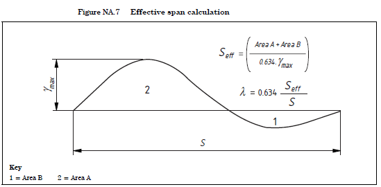

dyn_analysis module
Classes and methods used to implement specific forms of dynamic analysis
# -*- coding: utf-8 -*- """ Classes and methods used to implement specific forms of dynamic analysis """ from __init__ import __version__ as currentVersion import numpy import timeit import itertools import matplotlib.pyplot as plt from matplotlib.ticker import FuncFormatter import dill import os import scipy from inspect import isfunction #import multiprocessing # does not work with Spyder! import tstep import loading import msd_chain from loading import UKNA_BSEN1991_2_walkers_joggers_loading as pedestrian_loading def load(fName): """ De-serialises `Dyn_Analysis` object from pickle fill """ with open(fName,'rb') as fobj: print("\nLoading serialised `tstep_results` object from `{0}`".format(fName)) obj = dill.load(fobj) print("De-serialisation successful!\n") return obj class Dyn_Analysis(): """ Base class for dynamic analysis implementations _Inheritance expected_ """ def __init__(self,name:str,dynsys_obj,loading_obj): """ Initialisation function _All derived classes are expected to run this function_ """ self.name = name """ String identifier for object """ self.dynsys_obj = dynsys_obj """ Dynamic system to which analysis relates """ self.loading_obj = loading_obj """ Object defining applied loading """ def run(self): """ Runs dynamic analysis _Inheritance expected_ """ pass def _pickle_fName(self,fName): """ Defines default filename for pickle files """ if fName is None: fName = "{0}".format(self.__class__.__name__) if self.name is not None: fName += "{0}".format(self.name) fName += ".pkl" return fName def save(self,fName=None): """ Serialises object to file `fName` """ fName=self._pickle_fName(fName) with open('{0}'.format(fName), 'wb') as dill_file: print("Serialising `{0}` object to `{1}`".format(self.__class__.__name__,fName)) dill.dump(self, dill_file) print("Serialisation complete!") class MovingLoadAnalysis(Dyn_Analysis): """ Class to implement moving load analysis *** _Moving load analysis_ involves the determining the response of the system to groups of point loads moving in a pre-defined manner along a defined track. _Moving loads_ include, but are not limited to: * Train axles, which are usually at pre-defined spacings * Vehicle axles * Forces to represent the actions of walkers/joggers per UK NA to BS EN 1991-2 """ def __init__(self, modalsys_obj, name=None, loadtrain_obj=None, loadtrain_fName="loadDefs.csv", loadVel=5.0, use_abs_modeshape=False, tEpilogue=10.0, dt=None, dt_loads=0.01, max_dt=None, retainDOFTimeSeries=True, retainResponseTimeSeries=True, writeResults2File=False, results_fName="results.csv"): """ Initialisation function *** Required: * `modalsys_obj`, modal system to which analysis relates **Important note:** `modalsys_obj` must be a modal system, as the action of the moving loads is determined by obtaining the mode-generalised force functions for each mode. _This is checked_. *** Optional: * `loadtrain_obj`, load train object defining load pattern. If _None_ then `loadtrain_fName` must be provided (see below) * `loadtrain_fName", file containing load train definition * `loadVel`, constant velocity of load pattern (m/s) * `loadDefs_fName`, file containing load definitions """ # Handle None for loadtrain_obj if loadtrain_obj is None: loadtrain_obj = loading.LoadTrain(fName=loadtrain_fName) # Check class name of modalsys_obj if modalsys_obj.__class__.__name__ != "ModalSys": raise ValueError("`modalsys_obj`: instance of `ModalSys` class expected!") # Check class name of base class of loadtrain_obj if loadtrain_obj.__class__.__bases__[0].__name__ != "LoadTrain": raise ValueError("`loadtrain_obj`: instance of `LoadTrain` class "+ "(or dervied classes) expected!") # Run parent init super().__init__(name,modalsys_obj,loadtrain_obj) # Save details as attributes self.loadVel = loadVel """ Velocity of load pattern along track """ # Define time-stepping analysis tStart, tEnd = self._CalcSimDuration(loadVel=loadVel, tEpilogue=tEpilogue) # Define force function for parent system and subsystems modalForces_func = modalsys_obj.CalcModalForces(loading_obj=loadtrain_obj, loadVel=loadVel, dt=dt_loads, use_abs_modeshape=use_abs_modeshape) force_func_dict = {modalsys_obj : modalForces_func} self.tstep_obj = tstep.TStep(modalsys_obj, name=name, tStart=tStart, tEnd=tEnd, dt=dt, max_dt=max_dt, force_func_dict=force_func_dict, retainDOFTimeSeries=retainDOFTimeSeries, retainResponseTimeSeries=retainResponseTimeSeries, writeResults2File=writeResults2File, results_fName=results_fName ) """ Time-stepping solver object """ self.results_obj = self.tstep_obj.results_obj """ Results object """ def run(self, saveResults=False, save_fName=None): """ Runs moving load analysis, using `tstep.run()` _Refer documentation for that function for more details_ """ print("***** Running `%s`..." % self.__class__.__name__) print("Dynamic system: '{0}'".format(self.dynsys_obj.name)) print("Load pattern: '{0}'".format(self.loading_obj.name)) print("Load velocity: %.1f" % self.loadVel) tic=timeit.default_timer() results_obj = self.tstep_obj.run() toc=timeit.default_timer() print("***** Analysis complete after %.3f seconds." % (toc-tic)) if saveResults: self.save(fName=save_fName) return results_obj def _CalcSimDuration(self,loadVel=10.0,tEpilogue=5.0): """ Calculates the required duration for time-stepping simulation *** Optional: * `loadVel`, constant velocity (m/s) of the load pattern * `tEpilogue`, additional time to run following exit of last load from track overlying the dynamic system in question. In the case of `Ltrack` and `loadLength`, if _None_ is provided then function will attempt to obtain this information from class attributes. *** Returns: tStart, `tEnd`: start and end times (secs) for simulation """ #print("tEpilogue = %.3f" % tEpilogue) modalsys_obj = self.dynsys_obj loadtrain_obj = self.loading_obj # Get length of track along which loading is running attr = "Ltrack" obj = modalsys_obj if hasattr(obj,attr): Ltrack = getattr(obj,attr) else: raise ValueError("`{0}` not defined!".format(attr)) # Get length of load train attr = "loadLength" obj = loadtrain_obj if hasattr(obj,attr): loadLength = getattr(obj,attr) else: raise ValueError("`{0}` not defined!".format(attr)) # Determine time required for all loads to pass along track tStart=0 Ltotal = Ltrack + loadLength tEnd = Ltotal/loadVel + tEpilogue return tStart, tEnd def PlotResults(self,dofs2Plot=None): """ Plots results using `tstep_results.PlotResults()`. _Refer documentation from that function for further details_ """ self.results_obj.PlotResults(dofs2Plot=dofs2Plot) class UKNA_BSEN1991_2_walkers_joggers(MovingLoadAnalysis): """ Implements transient analysis for walkers/joggers case per NA.2.44.4 of UK NA to BS EN 1992-1:2003 """ def __init__(self, modalsys_obj, mode_index:int, name=None, bridgeClass='A', analysis_type="walkers", dt=None, verbose=True, calc_Seff=True, **kwargs): """ Initialisation function *** Required: * `modalsys_obj`, object defining modal system to be analysed * `mode_index`, _integer_ to denote mode at which resonance should to targeted *** Optional: * `dt`, time step to be used for results evaluation. If _None_ then a reasonable time step to use will be determined, based on the frequency of the forcing function * calc_Seff`, _boolean_, dictates whether effective span will be computed according to Figure NA.7. If False, overall span will be used (conservative). Additional keyword arguments can be defined. These should relate the `__init__()` function of the `MovingLoadAnalysis` class """ # Create default name for analysis object if name is None: name = modalsys_obj.name + " - Mode %d - %s" % (mode_index, analysis_type) # Get applicable parameters per Table NA.7 according to bridgeClass bridgeClass = bridgeClass.upper() if bridgeClass == 'A': N_walkers = 2 N_joggers = 0 elif bridgeClass == 'B': N_walkers = 4 N_joggers = 1 elif bridgeClass == 'C': N_walkers = 8 N_joggers = 2 elif bridgeClass == 'D': N_walkers = 16 N_joggers = 4 else: raise ValueError("Invalid 'bridgeClass'!") # Define loading velocity per Table NA.8 # Get appropriate N value to use if analysis_type == "walkers": load_velocity = 1.7 N_to_use = N_walkers elif analysis_type == "joggers": load_velocity = 3.0 N_to_use = N_joggers else: raise ValueError("Invalid 'analysis_type'!") self.N = N_to_use # Get natural frequency of mode to consider eig_results = modalsys_obj.CalcEigenproperties() f_d = eig_results["f_d"] # damped natural frequencies of mode f_d = numpy.abs(f_d[mode_index]) eta = eig_results["eta"][mode_index] logdec = 2*numpy.pi*eta self.fv = f_d self.eta = eta self.logdec = logdec # Analyse modeshape to determine effective span S = modalsys_obj.Ltrack if calc_Seff: attrName = "Seff" if hasattr(modalsys_obj,attrName): Seff = getattr(modalsys_obj,attrName) else: Seff, lambda_vals = Calc_Seff(modalsys_obj.modeshapeFunc,S=S, verbose=True, makePlot=False) # save to avoid recalculating setattr(modalsys_obj,attrName,Seff) modalsys_obj.lambda_vals = lambda_vals # Get Seff for mode being considered Seff = Seff[int(mode_index/2)] else: # "In all cases it is conservative to use Seff = S" Seff = S self.Seff = Seff # Obtain gamma from Figure NA.9 gamma = UKNA_BSEN1991_2_Figure_NA_9(logdec,Seff) self.gamma = gamma # Define loading objects to represent walkers and joggers loading_obj = pedestrian_loading(fv = f_d, gamma=gamma, N=N_to_use, analysis_type=analysis_type) # Determine reasonable time step to use if dt is None: # Rule of thumb - 10x frequency under consideration fs = 10 * f_d dt = 1 / fs # Run parent init super().__init__(modalsys_obj=modalsys_obj, name=name, loadtrain_obj=loading_obj, loadVel=load_velocity, use_abs_modeshape=True, # use sign-corrected modeshapes dt=dt, **kwargs) if verbose: print("***** Transient moving load analysis initialised *****") print("Modal system:\t\t'%s'" % modalsys_obj.name) print("Bridge class:\t\t'%s'" % bridgeClass) print("Mode index:\t\t%d" % (mode_index+1)) print("Mode frequency:\t\t%.2f Hz" % f_d) print("Loading object:\t\t'%s'" % loading_obj.name) print("Load velocity:\t\t%.1f m/s" % load_velocity) print("Seff (m):\t\t%.1f" % Seff) print("gamma:\t\t\t%.2f" % gamma) print("") class UKNA_BSEN1991_2_crowd(): """ Class to implement crowd loading analysis to UK NA to BS EN1991-2 """ def __init__(self, modalsys_obj, mode_index:int, deck_width_func_list=[lambda x: 3.0], modeshapes_fname_list=["modeshapes_edge1.csv", "modeshapes_edge2.csv"], name=None, bridgeClass='A', verbose=True, calc_Seff=True): """ Initialisation function *** Required: * `modalsys_obj`, object defining modal system to be analysed * `mode_index`, _integer_ to denote mode at which resonance should to targeted * `modeshapes_fname_list`, list of strings denoting files containing modeshape data along minimum of 2 deck lines: * List length = nDeckLines * Minimum nDeckLines = 2 * `deck_width_func_list`, list of functions to denote how width (m) of each deck strip (between lines relating to `modeshapes_fname_list`) varies with chainage: * List length = (nDeckLines-1) required (this is checked) * Default function establishes single deck strip of width = 3.0m. *** Optional: * calc_Seff`, _boolean_, dictates whether effective span will be computed according to Figure NA.7. If False, overall span will be used (conservative). """ # Create default name for analysis object if name is None: name = modalsys_obj.name + " - Mode %d - Crowd" % mode_index # Check `modeshapes_fname_list` input if not isinstance(modeshapes_fname_list,list): raise ValueError("`modeshapes_fname_list`: list expected") nDeckLines = len(modeshapes_fname_list) if nDeckLines < 2: raise ValueError("Minimum of 2 deck lines must be defined " + "via `modeshapes_fname_list`") for i, file_str in enumerate(modeshapes_fname_list): if not os.path.isfile(file_str): raise ValueError("`modeshapes_fname_list[%d]`" % i + " does not exist!") # Check `deck_width_func_list` input if not isinstance(deck_width_func_list,list): raise ValueError("`deck_width_func_list`: list expected") nDeckStrips = len(deck_width_func_list) if nDeckStrips != nDeckLines - 1: raise ValueError("nDeckStrips = nDeckLines - 1 expected") for i, width_func in enumerate(deck_width_func_list): if not isfunction(width_func): raise ValueError("`deck_width_func_list[%d]`" % i + " is not a function") # Get applicable parameters per Table NA.7 according to bridgeClass bridgeClass = bridgeClass.upper() print("CHECK DENSITIES!") if bridgeClass == 'A': crowd_density=0 # persons/m2 elif bridgeClass == 'B': crowd_density=0.4 elif bridgeClass == 'C': crowd_density=0.8 elif bridgeClass == 'D': crowd_density=1.5 else: raise ValueError("Invalid 'bridgeClass'!") # Read modeshape data from file, determine interpolation functions Ltrack_list = [] modeshapeFunc_list = [] for fName in modeshapes_fname_list: mfunc, Ltrack = modalsys_obj.DefineModeshapes(fName=fName, saveAsAttr=False) Ltrack_list.append(Ltrack) modeshapeFunc_list.append(mfunc) class Multiple(): """ Function to run multiple dynamic analyses and provide functionality to store, plot and analyse results from multiple dynamic analyses in a systematic manner """ def __init__(self, className:str, dynsys_obj:object, writeResults2File:bool=False, retainDOFTimeSeries:bool=False, retainResponseTimeSeries:bool=False, **kwargs): """ Initialisation function **** Required: * `className`, _string_ to denote `Dyn_Analysis` class (usually inherited) that implements the required analysis type * `dynsys_obj`, dynamic system to which analysis relates *** Optional: * `retainResponseTimeSeries`, _boolean_, denotes whether detailed _response_ time series results can be deleted once summary statistics have been computed * `retainDOFTimeSeries`, _boolean_, denotes whether detailed _DOF_ time series results can be deleted once summary statistics have been computed By default _False_ is assigned to be above (contrary to usual defaults) as running multiple analyses would otherwise often lead to large memory demands. """ print("Initialising multiple `{0}`".format(className)) if className == "MovingLoadAnalysis": ReqdClass = MovingLoadAnalysis kwargs2permute = ["loadVel","loadtrain_obj"] elif className == "UKNA_BSEN1991_2_walkers_joggers": ReqdClass = UKNA_BSEN1991_2_walkers_joggers kwargs2permute = ["analysis_type","mode_index"] else: raise ValueError("Unsupported class name!") # Get input arguments to permute vals2permute={} for key in kwargs2permute: # Get list as supplied via **kwargs if key in kwargs: vals_list = kwargs[key] del kwargs[key] # Convert to list if single if not isinstance(vals_list,list): vals_list = [vals_list] vals2permute[key]=vals_list else: raise ValueError("'{0}' ".format(key) + "included in `kwargs2permute` list but " + "list of values to permute not provided!") # Populate object array with initialised objects vals_list = list(itertools.product(*vals2permute.values())) analysis_list=[] nAnalysis = len(vals_list) for i in range(nAnalysis): # Prepare dict of key arguments to pass kwargs_vals = vals_list[i] kwargs_dict = dict(zip(kwargs2permute, kwargs_vals)) # Append any general kwargs provided results_fName = "results/analysis%04d.csv" % (i+1) kwargs_dict.update(kwargs) kwargs_dict.update({"retainDOFTimeSeries":retainDOFTimeSeries, "retainResponseTimeSeries":retainResponseTimeSeries, "writeResults2File":writeResults2File, "results_fName":results_fName}) # Initialisise analysis object analysis_list.append(ReqdClass(name="%04d"% i, modalsys_obj=dynsys_obj, **kwargs_dict)) self.dynsys_obj = dynsys_obj """ `DynSys` object to which analysis relates """ self.analysisType = className """ Class name of `dyn_analysis` derived class """ self.vals2permute = vals2permute """ Dictionary of keywords and values to permute in the multiple analyses defined """ self.vals2permute_shape = tuple([len(x) for x in self.vals2permute.values()]) """ Tuple to denote the shape of lists specified in `vals2permute` """ self.results_arr=None """ ndarray of `tstep_results` object instances """ self.stats_dict=None """ Dict of ndarrays containing stats (max, min, std, absmax) for each of the analyses carried out, for each of the responses defined """ self.analysis_list = analysis_list """ List of `Dyn_Analysis` object instances, each of which defines a dynamic analysis to be performed """ def run(self,save=True,solveInParallel=False): """ Runs multiple dynamic analyses, as defined by `__init__` *** In principle this can be done in parallel, to efficiently use all avaliable cores and give improve runtime. _Parallel processing not yet implemented due to outstanding bug associated with using `multiprocessing` module from within Spyder_ """ print("Running multiple `{0}`\n".format(self.analysisType)) tic=timeit.default_timer() # Run analyses using parallel processing (if possible) if solveInParallel: print("Parallel processing not yet implemented due to " + "outstanding bug associated with using "+ "`multiprocessing` module from within Spyder\n"+ "A single-process analysis will be carried out instead.") # Run all pre-defined analyses for i, x in enumerate(self.analysis_list): print("Analysis #%04d of #%04d" % (i+1, len(self.analysis_list))) x.run(saveResults=False) print("")#clear line for emphasis toc=timeit.default_timer() print("Multiple `%s` analysis complete after %.3f seconds!\n" % (self.analysisType,(toc-tic))) # Reshape results objects in ndarray results_obj_list = [x.tstep_obj.results_obj for x in self.analysis_list] reqdShape = self.vals2permute_shape results_arr = numpy.reshape(results_obj_list,reqdShape) self.results_arr = results_arr # Collate statistics self.collate_stats() # Pickle results if save: self.save() def plot_stats(self,stat_name='absmax', key2plot='loadVel', xConversionFactor:float=1.0, xlabel=None, figsize_inches=(14,8)): """ Produces a plot of a given taken across multiple analyses Optional: * `stat_name`, name of statistic to be plotted * `key2plot`, name of key within `vals2permute` dict to be used as x-axis in plot """ raise ValueError("UNFINISHED: DO NOT USE!") # Re-collate statistics as required if self.stats_dict is None: self.collate_stats() # Check requested stats is in dict if not stat_name in self.stats_dict: raise ValueError("Invalid statistic selected!") # Obtain responses names responseNames = self.dynsys_obj.output_names_list print(responseNames) # Get index and value to use along x-axis #kwargs2permute = list(self.vals2permute.keys()) #key2plot_index=[i for i, x in enumerate(kwargs2permute) if x==key2plot][0] x_vals = xConversionFactor * numpy.array(self.vals2permute[key2plot]) # Retrieve stats to plot stats_arr = self.stats_dict[stat_name] print("stats_arr.shape: {0}".format(stats_arr.shape)) """ Current manual workaround to produce load vs velocity plot! (Code should be tidied to be more generic) """ # Create figure for each set of responses nFigures = len(responseNames) fig_list = [] for fig_index in range(nFigures): nSubplots = len(responseNames[fig_index]) fig, axarr = plt.subplots(nSubplots, sharex=True) fig.set_size_inches(figsize_inches) fig_list.append(fig) # Create subplots for each response for splt_index in range(nSubplots): r = splt_index ax = axarr[splt_index] vals2plot = stats_arr[:,:,r] ax.plot(x_vals,vals2plot) ax.set_title(responseNames[fig_index][r]) if (xlabel is not None) and (splt_index==nSubplots-1): ax.set_xlabel(xlabel) return fig_list def _pickle_fName(self,fName): """ Defines default filename for pickle files """ if fName is None: fName = "{0}_{1}".format(self.__class__.__name__,self.analysisType) if self.dynsys_obj.name is not None: fName += "_{0}".format(self.dynsys_obj.name) fName += ".pkl" return fName def save(self,fName=None): """ Serialises object to file `fName` """ fName=self._pickle_fName(fName) with open('{0}'.format(fName), 'wb') as dill_file: print("\nSerialising `{0}` object to `{1}`".format(self.__class__.__name__,fName)) dill.dump(self, dill_file) print("Serialisation complete!\n") def collate_stats(self): """ Collates computed statistics into a dict of ndarrays, to faciliate efficient slicing operations, for example """ print("Collating statistics...") # Get list of all tstep_results objects associate with Multiple() if self.results_arr is None: raise ValueError("self.results_arr=None! No results to collate!") results_list = numpy.ravel(self.results_arr).tolist() def collate_specified_stats(stats_name = 'max'): """ Function to collate specified stats, across all results objects """ # Loop over all tstep_results objects stats_list = [] for i, results_obj in enumerate(results_list): for key, stats_dict in results_obj.response_stats_dict.items(): stats_vals = stats_dict[stats_name].tolist() if i==0: nResponses = len(stats_vals) stats_list.append(stats_vals) # Flatten nested list arr = numpy.ravel(stats_list) # Reshape as ndarray newshape = self.vals2permute_shape + (nResponses,) arr = numpy.reshape(arr,newshape) print("`{0}` stats saved as {1} ndarray".format(stats_name,arr.shape)) return arr # Loop over all systems and subsystems stats_dict_outer={} DynSys_list = results_list[0].tstep_obj.dynsys_obj.DynSys_list for dynsys_obj in DynSys_list: print("Collating response stats for system '%s'" % dynsys_obj.name) # Loop over all response stats types, e.g. 'max', 'min' etc. stats_dict_inner={} stats_names_list = list(results_list[0].response_stats_dict[dynsys_obj].keys()) for stats_name in stats_names_list: stats_dict_inner[stats_name] = collate_specified_stats(stats_name) stats_dict_outer[dynsys_obj] = stats_dict_inner # Save as attribute self.stats_dict = stats_dict_outer return stats_dict_outer class PedestrianDynamics_transientAnalyses(Multiple): """ Implements the full set of analyses required to fully-implement the method given in NA.2.44.4 of UK NA to BS EN 1991-2 i.e. transient analyses for both walkers and joggers, for all modes """ def __init__(self, modalsys_obj, bridgeClass='A', **kwargs): """ Initialisation function **** Required: * `modalsys_obj`, modal system to which analysis relates *** Optional: * `bridgeClass`, _string_, either 'A', 'B', 'C', or 'D'. Refer Table NA.7 for description of bridge classes Additional keyword arguments may be passed. These should relate to the `__init__()` function of the `Multiple` class. """ # Get mode indexs to loop over # Note modes sorted into ascending frequency but in conjugate pairs # Hence step through modes x2 nModes = modalsys_obj.GetSystemMatrices()["nDOF"] mode_index_list = numpy.arange(0,2*nModes,2).tolist() # Run parent init function super().__init__(className="UKNA_BSEN1991_2_walkers_joggers", dynsys_obj=modalsys_obj, bridgeClass=bridgeClass, mode_index=mode_index_list, analysis_type=["walkers","joggers"], verbose=False, **kwargs) # Save key variables as attributes self.bridgeClass = bridgeClass def plot_modal_params(self): fig, axarr = plt.subplots(2) fig.set_size_inches((6,8)) fig.subplots_adjust(hspace=0.4,right=0.8) # Get modal properties as used in analyses nModes = int(len(self.analysis_list)/2) mode_index = numpy.arange(0,nModes,1)+1 fv = [x.fv for x in self.analysis_list][:nModes] eta = [x.eta for x in self.analysis_list][:nModes] # Plot details of system ax = axarr[0] ax.bar(mode_index,fv) ax.set_xlabel("Mode index") ax.set_xticks(mode_index) ax.set_ylabel("$f_{d}$ (Hz)",fontsize=8.0) ax.set_title("Damped natural frequencies") ax = axarr[1] ax.bar(mode_index,eta) ax.set_xlabel("Mode index") ax.set_xticks(mode_index) ax.set_ylim([0,ax.get_ylim()[1]]) ax.set_ylabel("Damping ratio",fontsize=8.0) ax.yaxis.set_major_formatter(FuncFormatter(lambda y, _: '{:.1%}'.format(y))) ax.set_title("Modal damping") # Add equivilent axis for log dec ax2 = ax.twinx() def logdec(eta): return 2*numpy.pi*eta delta_incr = 0.01 new_yticks=numpy.arange(0,ax.get_ylim()[1],delta_incr/(2*numpy.pi)) ax2.set_ylim(ax.get_ylim()) ax2.set_yticks(new_yticks) ax2.set_yticklabels(["%.2f" % d for d in logdec(new_yticks)]) ax2.set_ylabel("Log decrement $\delta$") return fig def plot_response_stats(self, dynsys2plot=None, responses2plot=None, sharey='row', verbose=True): """ Plots statistics of responses computed, across all analyses *** Optional: * `dynsys2plot`, list of subsystem objects to plot responses for. If None (default) responses will be plotted for all subsystems * `responses2plot`, list of indices specifying responses to be plotted. If None (default) all responses will be plotted, for each sub-system * `sharey`, passed to pyplot.subplots() method. Controls whether subplots should share common y scale. """ print("Plotting response statistics...") nModes = int(len(self.analysis_list)/2) mode_index = numpy.arange(0,nModes,1)+1 fig_list = [] if dynsys2plot is None: dynsys2plot = self.dynsys_obj.DynSys_list else: if not (dynsys2plot in self.dynsys_obj.DynSys_list): raise ValueError("'dynsys2plot' does not belong " + "to system analysed!") if not isinstance(dynsys2plot,list): dynsys2plot = [dynsys2plot] # Loop over all systems and subsystems for dynsys_obj in dynsys2plot: # Get stats dict relating to this system stats_dict = self.stats_dict[dynsys_obj] # Get indices of responses to plot response_names = dynsys_obj.output_names if responses2plot is None: nResponses = len(response_names) responses2plot = list(range(nResponses)) else: nResponses = len(responses2plot) # Create new figure fig, axarr = plt.subplots(nResponses,2, sharex=True, sharey=sharey) fig.set_size_inches((14,8)) fig_list.append(fig) # Loop to plot all responses requested for row, r in enumerate(responses2plot): response_name = response_names[r] # Get stats for this response stats_dict_r = {} for stats_name, stats_vals in stats_dict.items(): stats_dict_r[stats_name]=stats_vals[:,:,r] if verbose: print("Plotting stats for response '%s':" % response_name) # Plot response stats for walkers and joggers responses for col, case in zip([0,1],['walkers','joggers']): ax = axarr[row,col] for i, stats_name in enumerate(['absmax','max','min']): stats_vals = stats_dict_r[stats_name][col,:] w=0.1 ax.bar(mode_index+(i-1)*w, stats_vals, width=w, label=stats_name ) ax.legend(loc='lower right',fontsize=6.0) if col==0: ax.set_ylabel(response_name,size=8.0) if row==0: ax.set_title("Responses to %s" % case) if row==nResponses-1: ax.set_xlabel("Mode index") ax.set_xticks(mode_index) fig.suptitle("Statistics of computed responses to pedestrian loading\n" + "UK NA to BS EN 1991-2, NA.2.44.4\n" + "Subsystem: '%s'\n" % dynsys_obj.name, fontsize=10.0) return fig_list # ********************** FUNCTIONS **************************************** def Calc_Seff(modeshapeFunc,S, dx=2.0, makePlot=True, verbose=True): """ Calculates effective span, as defined by NA.2.44.4 and Figure NA.7 in BS EN 1991-2  *** Required: * `modeshapeFunc`, _function_ defining variation of modeshapes with chainage. In general, for systems with multiple modes, `modeshapeFunc` to return _array_. * `S`, length of structure. Integration of modeshapes to compute _effective span_ is carried out in the interval _[0, S]_. *** Optional: * `dx`, distance increment used by `scipy.integrate.cumtrapz()` """ # Note absolute value integral to be computed def abs_modeshapeFunc(x): return numpy.abs(modeshapeFunc(x)) # Evaluate modeshapes at specified chainages x_vals = numpy.arange(0,S+0.5*dx,dx) y_vals = modeshapeFunc(x_vals) y_abs_vals = abs_modeshapeFunc(x_vals) # Integrate using Scipy routine y_integral_vals = scipy.integrate.cumtrapz(y_abs_vals,x_vals, axis=0,initial=0.0) y_integral = y_integral_vals[-1,:] # Get maxima y_absmax = numpy.max(y_abs_vals,axis=0) y_absmax_overall = numpy.max(y_absmax) # Compute Seff Seff = numpy.divide(y_integral, 0.634*y_absmax) # Compute lambda per eqn in Figure NA.7 lambda_vals = 0.634 * Seff / S if verbose: print("Analysing modeshape functions to determine Seff...") print("S (m):\t\t{0}".format(S)) print("Seff (m):\t{0}".format(Seff)) print("Max modeshapes:\t{0}".format(y_absmax)) print("") if makePlot: fig, axarr = plt.subplots(3,sharex=True) fig.suptitle("Calculation of $S_{eff}$ (m)") ax1 = axarr[0] ax2 = axarr[1] ax3 = axarr[2] handles = ax1.plot(x_vals,y_vals) ax1.set_ylabel("Modeshapes, $\phi(x)$") ax1.set_ylim([-y_absmax_overall,y_absmax_overall]) ax2.plot(x_vals,y_abs_vals) ax2.set_ylabel("$|\phi|(x)$") ax2.set_ylim([0,y_absmax_overall]) ax3.plot(x_vals,y_integral_vals) ax3.set_xlim([0,S]) ax3.set_xlabel("Chainage (m)") ax3.set_ylabel("$\int_{0}^{x}|\phi|(x).dx$") ax3.set_ylim([0,ax3.get_ylim()[1]]) for val, handle in zip(y_integral,handles): ax2.axhline(val/S, color=handle.get_color(), linestyle='--', alpha=0.5) ax3.text(S,val," %.1f"%val,fontsize=6.0) return Seff, lambda_vals def CalcTransverseAreaIntegral(b,phi1,phi2): """ Computes sign-corrected integral across domain of width `b`, given (signed) edge ordinates `phi1` and phi2`. Linear variation of integrand within integration domain is assumed  Arrays of equal length can be supplied. """ # Change shapes agree if phi1.shape != phi2.shape: raise ValueError("Shapes of `phi1` and `phi2` do not agree!") if phi1.shape != b.shape: raise ValueError("Shapes of `phi1` and `b` do not agree!") # Test to see if same signs same_sign = numpy.equal(numpy.sign(phi1),numpy.sign(phi2)) # Obtain absolute values phi1_abs = numpy.abs(phi1) phi2_abs = numpy.abs(phi2) # Compute area integral on assumption of same sign area_same_sign = 0.5*b*(phi1_abs+phi2_abs) # Compute area integral where different sign area_different_sign = 0.5*b*(phi1_abs**2+phi2_abs**2)/(phi1_abs+phi2_abs) # Select appropriate case area_to_use = numpy.where(same_sign,area_same_sign,area_different_sign) return area_to_use def ResponseSpectrum(accFunc, tResponse, T_vals=None, eta=0.05, makePlot=True, **kwargs): """ Function to express ground acceleration time series as a seismic response spectrum *** _Seismic response spectra_ are used to summarises the vibration response of a SDOF oscillator in response to a transient ground acceleration time series. Seismic response spectra therefore represent a useful way of quantifying and graphically illustrating the severity of a given ground acceleration time series. *** Required: * `accFunc`, function a(t) defining the ground acceleration time series (usually this is most convenient to supply via an interpolation function) * `tResponse`, time interval over which to carry out time-stepping analysis. Set this to be at least the duration of the input acceleration time series! **Important note**: This routine expects a(t) to have units of m/s<sup>2</sup>. It is common (at least in the field of seismic analysis) to quote ground accelerations in terms of 'g'. Any such time series must be pre-processed by multiplying by g=9.81m/s<sup>2</sup>) prior to using this function, such that the supplied `accFunc` returns ground acceleration in m/s<sup>2</sup>. *** Optional: * `T_vals`, _list_, periods (in seconds) at which response spectra are to be evaluated. If _None_ will be set to logarithmically span the range [0.01,10.0] seconds, which is suitable for most applications. * `eta`, damping ratio to which response spectrum obtained is applicable. 5% is used by default, as this a common default in seismic design. * `makePlot`, _boolean_, controls whether results are plotted `kwargs` may be used to pass additional arguments down to `TStep` object that is used to implement time-stepping analysis. Refer `tstep` docs for further details *** Returns: Values are returned as a dictionary, containing the following entries: * `T_vals`, periods at which spectra are evaluated. * `S_D`, relative displacement spectrum (in m) * `S_V`, relative velocity spectrum (in m/s) * `S_A`, absolute acceleration spectrum (in m/s<sup>2</sup>) * `PSV`, psuedo-velocity spectrum (in m/s) * `PSA`, psuedo-acceleration spectrum (in m/s<sup>2</sup>) In addition, if `makePlot=True`: * `fig`, figure object for plot """ # Handle optional inputs if T_vals is None: T_vals = numpy.logspace(-2,1,100) T_vals = numpy.ravel(T_vals).tolist() # Print summary of key inputs if hasattr(accFunc,"__name__"): print("Ground motion function supplied: %s" % accFunc.__name__) print("Time-stepping analysis interval: [%.2f, %.2f]" % (0,tResponse)) print("Number of SDOF oscillators to be analysed: %d" % len(T_vals)) print("Damping ratio for SDOF oscillators: {:.2%}".format(eta)) # Loop through all periods M = 1.0 # unit mass for all oscillators results_list = [] print("Obtaining SDOF responses to ground acceleration...") for i, _T in enumerate(T_vals): period_str = "Period %.2fs" % _T # Define SDOF oscillator SDOF_sys = msd_chain.MSD_Chain(name=period_str, M_vals = M, f_vals = 1/_T, eta_vals = eta, showMsgs=False) # Add output matrix to extract results SDOF_sys.AddOutputMtrx(output_mtrx=numpy.identity(3), output_names=["RelDisp","RelVel","Acc"]) # Define forcing function def forceFunc(t): return -M*accFunc(t) # Define time-stepping analysis tstep_obj = tstep.TStep(SDOF_sys, tStart=0, tEnd=tResponse, force_func=forceFunc, retainResponseTimeSeries=True) # Run time-stepping analysis and append results results_list.append(tstep_obj.run(showMsgs=False)) # Obtain absolute acceleration by adding back in ground motion results_obj = tstep_obj.results_obj results_obj.responses[2,:] += accFunc(results_obj.t.T) # Recalculate statistics results_obj.CalcResponseStats(showMsgs=False) # Tidy up del SDOF_sys # Collate absmax statistics print("Retrieving maximum response statistics...") S_D = numpy.asarray([x.response_stats['absmax'][0] for x in results_list]) S_V = numpy.asarray([x.response_stats['absmax'][1] for x in results_list]) S_A = numpy.asarray([x.response_stats['absmax'][2] for x in results_list]) # Evaluate psuedo-specta omega = numpy.divide(2*numpy.pi,T_vals) PSV = omega * S_D PSA = omega**2 * S_D if makePlot: fig, axarr = plt.subplots(3, sharex=True) fig.suptitle("Response spectra: {:.0%} damping".format(eta)) ax = axarr[0] ax.plot(T_vals,S_D) ax.set_ylabel("SD (m)") ax.set_title("Relative displacement") ax = axarr[1] ax.plot(T_vals,S_V) ax.plot(T_vals,PSV) ax.legend((ax.lines),("$S_V$","Psuedo $S_V$",),loc='upper right') ax.set_ylabel("SV (m/s)") ax.set_title("Relative velocity") ax = axarr[2] ax.plot(T_vals,S_A) ax.plot(T_vals,PSA) ax.legend((ax.lines),("$S_A$","Psuedo $S_A$",),loc='upper right') ax.set_ylabel("SA (m/$s^2$)") ax.set_title("Absolute acceleration") ax.set_xlim([0,numpy.max(T_vals)]) ax.set_xlabel("Oscillator natural period T (secs)") fig.tight_layout() fig.subplots_adjust(top=0.90) # Return values as dict return_dict = {} return_dict["T_vals"]=T_vals return_dict["S_D"]=S_D return_dict["S_V"]=S_V return_dict["S_A"]=S_A return_dict["PSV"]=PSV return_dict["PSA"]=PSA if makePlot: return_dict["fig"]=fig else: return_dict["fig"]=None return return_dict def DesignResponseSpectrum_BSEN1998_1(T_vals=None, a_g=0.02, S=1.00, nu=1.00, T_BCD=[0.05,0.25,1.20]): """ Returns horizontal elastic design response spectrum as given by Cl. 3.2.2.2 of BS EN 1998-1:2004   Note response spectrum has units as given by `a_g` (units of 'g' typically) """ if len(T_BCD)!=3: raise ValueError("`T_BCD` expected to be list of length 3") # Unpack list items for salient periods T_B = T_BCD[0] T_C = T_BCD[1] T_D = T_BCD[2] if T_vals is None: # Create default T_vals list to fully-illustrate key features T_vals = numpy.concatenate((numpy.linspace(0,T_B,10,endpoint=False), numpy.linspace(T_B,T_C,10,endpoint=False), numpy.linspace(T_C,T_D,10,endpoint=False), numpy.linspace(T_D,2*T_D,10,endpoint=True))) Se_vals = [] for T in T_vals: if T < 0: raise ValueError("T_vals to be >0!") elif T < T_B: Se = 1 + (T / T_B)*(nu*2.5 - 1) elif T < T_C: Se = nu * 2.5 elif T < T_D: Se = nu * 2.5 * (T_C / T) else: Se = nu * 2.5 * (T_C*T_D)/(T**2) Se = a_g * S * Se Se_vals.append(Se) return T_vals, Se_vals def UKNA_BSEN1991_2_Figure_NA_9(logDec,Seff, groupType="pedestrian", makePlot=False): """ Determine reduction factor gamma, per Figure NA.9, UK NA to BS EN 1991-2:2003 Gamma factors allows for the unsynchronized combination of pedestrian actions within groups and crowds. """ # Digitised data for Figure NA.9 delta_vals = numpy.arange(0,0.21,0.02).tolist() Seff_vals = [10,12,15,20,30,40,60,100,200,300] gamma_vals=[[0.680,0.435,0.315,0.245,0.200,0.135,0.100,0.062,0.048,0.030], [0.692,0.462,0.345,0.283,0.240,0.180,0.150,0.117,0.103,0.093], [0.705,0.488,0.380,0.320,0.280,0.225,0.200,0.175,0.163,0.155], [0.716,0.512,0.410,0.350,0.315,0.267,0.248,0.230,0.218,0.215], [0.728,0.535,0.437,0.382,0.352,0.310,0.292,0.277,0.270,0.268], [0.738,0.556,0.465,0.415,0.385,0.350,0.335,0.322,0.320,0.320], [0.746,0.577,0.492,0.445,0.420,0.390,0.375,0.367,0.366,0.366], [0.755,0.597,0.518,0.473,0.451,0.426,0.415,0.408,0.408,0.408], [0.763,0.614,0.540,0.503,0.482,0.460,0.450,0.445,0.445,0.445], [0.774,0.632,0.565,0.530,0.513,0.496,0.485,0.480,0.480,0.480], [0.783,0.645,0.585,0.555,0.540,0.530,0.520,0.513,0.513,0.513]] gamma_vals = numpy.array(gamma_vals).T gamma_func = scipy.interpolate.interp2d(delta_vals,Seff_vals,gamma_vals, bounds_error=True) # Use interpolation function to read off value at inputs specified gamma = gamma_func(logDec,Seff) # Make plot (to show digitised curves) if makePlot: fig, ax = plt.subplots() for Seff in Seff_vals: ax.plot(delta_vals,gamma_func(delta_vals,Seff),label=("%.0f"%Seff)) ax.axvline(logDec,color='k',linestyle='--',alpha=0.3) ax.axhline(gamma,color='k',linestyle='--',alpha=0.3) ax.legend(loc='lower right',title="$S_{eff}$ (m)") ax.set_xlim([0,0.2]) # per Fig.NA.9 ax.set_ylim([0,0.8]) # per Fig.NA.9 ax.set_title("Reduction factor $\gamma$\n" + "per Figure NA.9, UK NA to BS EN 1992-1:2003") ax.set_xlabel("Log decrement damping") ax.set_ylabel("$\gamma$") return gamma # ********************** TEST ROUTINE **************************************** if __name__ == "__main__": testRoutine=8 if testRoutine==1: import modalsys modal_sys = modalsys.ModalSys(isSparse=False) modal_sys.AddOutputMtrx(fName="outputs.csv") def sine(t): return numpy.sin(5*t) loading_obj = loading.LoadTrain(loadX=0.0,loadVals=100.0, intensityFunc=sine, name="Sine test") #loading_obj = loading.LoadTrain() ML_analysis = MovingLoadAnalysis(modalsys_obj=modal_sys, dt=0.01, loadVel=20, loadtrain_obj=loading_obj, tEpilogue=5.0) ML_analysis.run() ML_analysis.PlotResults(dofs2Plot=[2,3,4]) elif testRoutine==2: import modalsys modal_sys = modalsys.ModalSys(isSparse=False) modal_sys.AddOutputMtrx(fName="outputs.csv") loading_obj = loading.LoadTrain() ML_analysis = MovingLoadAnalysis(modalsys_obj=modal_sys, dt=0.01, loadVel=100, loadtrain_obj=loading_obj, tEpilogue=5.0) ML_analysis.run() ML_analysis.PlotResults(dofs2Plot=[2,3,4]) elif testRoutine==3: import modalsys modal_sys = modalsys.ModalSys(isSparse=False) modal_sys.AddOutputMtrx(fName="outputs.csv") rslts = run_multiple("MovingLoadAnalysis", dynsys_obj=modal_sys, loadVel=(numpy.array([380,390,400])*1000/3600).tolist(), loadtrain_fName=["trainA2.csv","trainA5.csv"], dt=0.01) [x.PlotResults() for x in rslts] elif testRoutine==4: def test_func(t): return 0.02*numpy.sin(2.0*t) results = ResponseSpectrum(test_func, eta=0.005, T_vals=numpy.linspace(0.01,8.0,num=80)) elif testRoutine==5: T_vals, Se_vals = DesignResponseSpectrum_BSEN1998_1() plt.plot(T_vals,Se_vals) elif testRoutine==6: gamma_val = UKNA_BSEN1991_2_Figure_NA_9(0.045,35.0,makePlot=True) gamma_val = UKNA_BSEN1991_2_Figure_NA_9(0.100,200.,makePlot=True) gamma_val = UKNA_BSEN1991_2_Figure_NA_9(0.080,400.,makePlot=True) # out of bounds error expected elif testRoutine==7: L = 50.0 def testFunc(x): return numpy.array([numpy.sin(numpy.pi*x/L), numpy.sin(1.2*numpy.pi*x/L)]).T Seff = Calc_Seff(testFunc,L,makePlot=True) elif testRoutine==8: b = numpy.array([2.0,2.0,2.0,4.0,4.0]) phi1 = numpy.array([1.0,1.0,1.0,1.0,1.0]) phi2 = numpy.array([1.0,0.0,-1.0,1.0,-1.0]) integral_area = CalcTransverseAreaIntegral(b,phi1,phi2) print(integral_area) else: raise ValueError("Test routine does not exist!")
Module variables
var currentVersion
Functions
def CalcTransverseAreaIntegral(
b, phi1, phi2)
Computes sign-corrected integral across domain of width b, given (signed)
edge ordinates phi1 and phi2`.
Linear variation of integrand within integration domain is assumed

Arrays of equal length can be supplied.
def CalcTransverseAreaIntegral(b,phi1,phi2): """ Computes sign-corrected integral across domain of width `b`, given (signed) edge ordinates `phi1` and phi2`. Linear variation of integrand within integration domain is assumed  Arrays of equal length can be supplied. """ # Change shapes agree if phi1.shape != phi2.shape: raise ValueError("Shapes of `phi1` and `phi2` do not agree!") if phi1.shape != b.shape: raise ValueError("Shapes of `phi1` and `b` do not agree!") # Test to see if same signs same_sign = numpy.equal(numpy.sign(phi1),numpy.sign(phi2)) # Obtain absolute values phi1_abs = numpy.abs(phi1) phi2_abs = numpy.abs(phi2) # Compute area integral on assumption of same sign area_same_sign = 0.5*b*(phi1_abs+phi2_abs) # Compute area integral where different sign area_different_sign = 0.5*b*(phi1_abs**2+phi2_abs**2)/(phi1_abs+phi2_abs) # Select appropriate case area_to_use = numpy.where(same_sign,area_same_sign,area_different_sign) return area_to_use
def Calc_Seff(
modeshapeFunc, S, dx=2.0, makePlot=True, verbose=True)
Calculates effective span, as defined by NA.2.44.4 and Figure NA.7 in BS EN 1991-2

Required:
-
modeshapeFunc, function defining variation of modeshapes with chainage. In general, for systems with multiple modes,modeshapeFuncto return array. -
S, length of structure. Integration of modeshapes to compute effective span is carried out in the interval [0, S].
Optional:
dx, distance increment used byscipy.integrate.cumtrapz()
def Calc_Seff(modeshapeFunc,S, dx=2.0, makePlot=True, verbose=True): """ Calculates effective span, as defined by NA.2.44.4 and Figure NA.7 in BS EN 1991-2  *** Required: * `modeshapeFunc`, _function_ defining variation of modeshapes with chainage. In general, for systems with multiple modes, `modeshapeFunc` to return _array_. * `S`, length of structure. Integration of modeshapes to compute _effective span_ is carried out in the interval _[0, S]_. *** Optional: * `dx`, distance increment used by `scipy.integrate.cumtrapz()` """ # Note absolute value integral to be computed def abs_modeshapeFunc(x): return numpy.abs(modeshapeFunc(x)) # Evaluate modeshapes at specified chainages x_vals = numpy.arange(0,S+0.5*dx,dx) y_vals = modeshapeFunc(x_vals) y_abs_vals = abs_modeshapeFunc(x_vals) # Integrate using Scipy routine y_integral_vals = scipy.integrate.cumtrapz(y_abs_vals,x_vals, axis=0,initial=0.0) y_integral = y_integral_vals[-1,:] # Get maxima y_absmax = numpy.max(y_abs_vals,axis=0) y_absmax_overall = numpy.max(y_absmax) # Compute Seff Seff = numpy.divide(y_integral, 0.634*y_absmax) # Compute lambda per eqn in Figure NA.7 lambda_vals = 0.634 * Seff / S if verbose: print("Analysing modeshape functions to determine Seff...") print("S (m):\t\t{0}".format(S)) print("Seff (m):\t{0}".format(Seff)) print("Max modeshapes:\t{0}".format(y_absmax)) print("") if makePlot: fig, axarr = plt.subplots(3,sharex=True) fig.suptitle("Calculation of $S_{eff}$ (m)") ax1 = axarr[0] ax2 = axarr[1] ax3 = axarr[2] handles = ax1.plot(x_vals,y_vals) ax1.set_ylabel("Modeshapes, $\phi(x)$") ax1.set_ylim([-y_absmax_overall,y_absmax_overall]) ax2.plot(x_vals,y_abs_vals) ax2.set_ylabel("$|\phi|(x)$") ax2.set_ylim([0,y_absmax_overall]) ax3.plot(x_vals,y_integral_vals) ax3.set_xlim([0,S]) ax3.set_xlabel("Chainage (m)") ax3.set_ylabel("$\int_{0}^{x}|\phi|(x).dx$") ax3.set_ylim([0,ax3.get_ylim()[1]]) for val, handle in zip(y_integral,handles): ax2.axhline(val/S, color=handle.get_color(), linestyle='--', alpha=0.5) ax3.text(S,val," %.1f"%val,fontsize=6.0) return Seff, lambda_vals
def DesignResponseSpectrum_BSEN1998_1(
T_vals=None, a_g=0.02, S=1.0, nu=1.0, T_BCD=[0.05, 0.25, 1.2])
Returns horizontal elastic design response spectrum as given by Cl. 3.2.2.2 of BS EN 1998-1:2004
Note response spectrum has units as given by a_g (units of 'g' typically)
def DesignResponseSpectrum_BSEN1998_1(T_vals=None, a_g=0.02, S=1.00, nu=1.00, T_BCD=[0.05,0.25,1.20]): """ Returns horizontal elastic design response spectrum as given by Cl. 3.2.2.2 of BS EN 1998-1:2004   Note response spectrum has units as given by `a_g` (units of 'g' typically) """ if len(T_BCD)!=3: raise ValueError("`T_BCD` expected to be list of length 3") # Unpack list items for salient periods T_B = T_BCD[0] T_C = T_BCD[1] T_D = T_BCD[2] if T_vals is None: # Create default T_vals list to fully-illustrate key features T_vals = numpy.concatenate((numpy.linspace(0,T_B,10,endpoint=False), numpy.linspace(T_B,T_C,10,endpoint=False), numpy.linspace(T_C,T_D,10,endpoint=False), numpy.linspace(T_D,2*T_D,10,endpoint=True))) Se_vals = [] for T in T_vals: if T < 0: raise ValueError("T_vals to be >0!") elif T < T_B: Se = 1 + (T / T_B)*(nu*2.5 - 1) elif T < T_C: Se = nu * 2.5 elif T < T_D: Se = nu * 2.5 * (T_C / T) else: Se = nu * 2.5 * (T_C*T_D)/(T**2) Se = a_g * S * Se Se_vals.append(Se) return T_vals, Se_vals
def ResponseSpectrum(
accFunc, tResponse, T_vals=None, eta=0.05, makePlot=True, **kwargs)
Function to express ground acceleration time series as a seismic response spectrum
Seismic response spectra are used to summarises the vibration response of a SDOF oscillator in response to a transient ground acceleration time series. Seismic response spectra therefore represent a useful way of quantifying and graphically illustrating the severity of a given ground acceleration time series.
Required:
-
accFunc, function a(t) defining the ground acceleration time series (usually this is most convenient to supply via an interpolation function) -
tResponse, time interval over which to carry out time-stepping analysis. Set this to be at least the duration of the input acceleration time series!
Important note:
This routine expects a(t) to have units of m/s2. It is common (at least in the field of seismic analysis) to quote ground accelerations in terms of 'g'.
Any such time series must be pre-processed by multiplying by
g=9.81m/s2) prior to using this function, such that the
supplied accFunc returns ground acceleration in m/s2.
Optional:
-
T_vals, list, periods (in seconds) at which response spectra are to be evaluated. If None will be set to logarithmically span the range [0.01,10.0] seconds, which is suitable for most applications. -
eta, damping ratio to which response spectrum obtained is applicable. 5% is used by default, as this a common default in seismic design. -
makePlot, boolean, controls whether results are plotted
kwargs may be used to pass additional arguments down to TStep object
that is used to implement time-stepping analysis. Refer tstep docs for
further details
Returns:
Values are returned as a dictionary, containing the following entries:
T_vals, periods at which spectra are evaluated.S_D, relative displacement spectrum (in m)S_V, relative velocity spectrum (in m/s)S_A, absolute acceleration spectrum (in m/s2)PSV, psuedo-velocity spectrum (in m/s)PSA, psuedo-acceleration spectrum (in m/s2)
In addition, if makePlot=True:
fig, figure object for plot
def ResponseSpectrum(accFunc, tResponse, T_vals=None, eta=0.05, makePlot=True, **kwargs): """ Function to express ground acceleration time series as a seismic response spectrum *** _Seismic response spectra_ are used to summarises the vibration response of a SDOF oscillator in response to a transient ground acceleration time series. Seismic response spectra therefore represent a useful way of quantifying and graphically illustrating the severity of a given ground acceleration time series. *** Required: * `accFunc`, function a(t) defining the ground acceleration time series (usually this is most convenient to supply via an interpolation function) * `tResponse`, time interval over which to carry out time-stepping analysis. Set this to be at least the duration of the input acceleration time series! **Important note**: This routine expects a(t) to have units of m/s<sup>2</sup>. It is common (at least in the field of seismic analysis) to quote ground accelerations in terms of 'g'. Any such time series must be pre-processed by multiplying by g=9.81m/s<sup>2</sup>) prior to using this function, such that the supplied `accFunc` returns ground acceleration in m/s<sup>2</sup>. *** Optional: * `T_vals`, _list_, periods (in seconds) at which response spectra are to be evaluated. If _None_ will be set to logarithmically span the range [0.01,10.0] seconds, which is suitable for most applications. * `eta`, damping ratio to which response spectrum obtained is applicable. 5% is used by default, as this a common default in seismic design. * `makePlot`, _boolean_, controls whether results are plotted `kwargs` may be used to pass additional arguments down to `TStep` object that is used to implement time-stepping analysis. Refer `tstep` docs for further details *** Returns: Values are returned as a dictionary, containing the following entries: * `T_vals`, periods at which spectra are evaluated. * `S_D`, relative displacement spectrum (in m) * `S_V`, relative velocity spectrum (in m/s) * `S_A`, absolute acceleration spectrum (in m/s<sup>2</sup>) * `PSV`, psuedo-velocity spectrum (in m/s) * `PSA`, psuedo-acceleration spectrum (in m/s<sup>2</sup>) In addition, if `makePlot=True`: * `fig`, figure object for plot """ # Handle optional inputs if T_vals is None: T_vals = numpy.logspace(-2,1,100) T_vals = numpy.ravel(T_vals).tolist() # Print summary of key inputs if hasattr(accFunc,"__name__"): print("Ground motion function supplied: %s" % accFunc.__name__) print("Time-stepping analysis interval: [%.2f, %.2f]" % (0,tResponse)) print("Number of SDOF oscillators to be analysed: %d" % len(T_vals)) print("Damping ratio for SDOF oscillators: {:.2%}".format(eta)) # Loop through all periods M = 1.0 # unit mass for all oscillators results_list = [] print("Obtaining SDOF responses to ground acceleration...") for i, _T in enumerate(T_vals): period_str = "Period %.2fs" % _T # Define SDOF oscillator SDOF_sys = msd_chain.MSD_Chain(name=period_str, M_vals = M, f_vals = 1/_T, eta_vals = eta, showMsgs=False) # Add output matrix to extract results SDOF_sys.AddOutputMtrx(output_mtrx=numpy.identity(3), output_names=["RelDisp","RelVel","Acc"]) # Define forcing function def forceFunc(t): return -M*accFunc(t) # Define time-stepping analysis tstep_obj = tstep.TStep(SDOF_sys, tStart=0, tEnd=tResponse, force_func=forceFunc, retainResponseTimeSeries=True) # Run time-stepping analysis and append results results_list.append(tstep_obj.run(showMsgs=False)) # Obtain absolute acceleration by adding back in ground motion results_obj = tstep_obj.results_obj results_obj.responses[2,:] += accFunc(results_obj.t.T) # Recalculate statistics results_obj.CalcResponseStats(showMsgs=False) # Tidy up del SDOF_sys # Collate absmax statistics print("Retrieving maximum response statistics...") S_D = numpy.asarray([x.response_stats['absmax'][0] for x in results_list]) S_V = numpy.asarray([x.response_stats['absmax'][1] for x in results_list]) S_A = numpy.asarray([x.response_stats['absmax'][2] for x in results_list]) # Evaluate psuedo-specta omega = numpy.divide(2*numpy.pi,T_vals) PSV = omega * S_D PSA = omega**2 * S_D if makePlot: fig, axarr = plt.subplots(3, sharex=True) fig.suptitle("Response spectra: {:.0%} damping".format(eta)) ax = axarr[0] ax.plot(T_vals,S_D) ax.set_ylabel("SD (m)") ax.set_title("Relative displacement") ax = axarr[1] ax.plot(T_vals,S_V) ax.plot(T_vals,PSV) ax.legend((ax.lines),("$S_V$","Psuedo $S_V$",),loc='upper right') ax.set_ylabel("SV (m/s)") ax.set_title("Relative velocity") ax = axarr[2] ax.plot(T_vals,S_A) ax.plot(T_vals,PSA) ax.legend((ax.lines),("$S_A$","Psuedo $S_A$",),loc='upper right') ax.set_ylabel("SA (m/$s^2$)") ax.set_title("Absolute acceleration") ax.set_xlim([0,numpy.max(T_vals)]) ax.set_xlabel("Oscillator natural period T (secs)") fig.tight_layout() fig.subplots_adjust(top=0.90) # Return values as dict return_dict = {} return_dict["T_vals"]=T_vals return_dict["S_D"]=S_D return_dict["S_V"]=S_V return_dict["S_A"]=S_A return_dict["PSV"]=PSV return_dict["PSA"]=PSA if makePlot: return_dict["fig"]=fig else: return_dict["fig"]=None return return_dict
def UKNA_BSEN1991_2_Figure_NA_9(
logDec, Seff, groupType='pedestrian', makePlot=False)
Determine reduction factor gamma, per Figure NA.9, UK NA to BS EN 1991-2:2003
Gamma factors allows for the unsynchronized combination of pedestrian actions within groups and crowds.
def UKNA_BSEN1991_2_Figure_NA_9(logDec,Seff, groupType="pedestrian", makePlot=False): """ Determine reduction factor gamma, per Figure NA.9, UK NA to BS EN 1991-2:2003 Gamma factors allows for the unsynchronized combination of pedestrian actions within groups and crowds. """ # Digitised data for Figure NA.9 delta_vals = numpy.arange(0,0.21,0.02).tolist() Seff_vals = [10,12,15,20,30,40,60,100,200,300] gamma_vals=[[0.680,0.435,0.315,0.245,0.200,0.135,0.100,0.062,0.048,0.030], [0.692,0.462,0.345,0.283,0.240,0.180,0.150,0.117,0.103,0.093], [0.705,0.488,0.380,0.320,0.280,0.225,0.200,0.175,0.163,0.155], [0.716,0.512,0.410,0.350,0.315,0.267,0.248,0.230,0.218,0.215], [0.728,0.535,0.437,0.382,0.352,0.310,0.292,0.277,0.270,0.268], [0.738,0.556,0.465,0.415,0.385,0.350,0.335,0.322,0.320,0.320], [0.746,0.577,0.492,0.445,0.420,0.390,0.375,0.367,0.366,0.366], [0.755,0.597,0.518,0.473,0.451,0.426,0.415,0.408,0.408,0.408], [0.763,0.614,0.540,0.503,0.482,0.460,0.450,0.445,0.445,0.445], [0.774,0.632,0.565,0.530,0.513,0.496,0.485,0.480,0.480,0.480], [0.783,0.645,0.585,0.555,0.540,0.530,0.520,0.513,0.513,0.513]] gamma_vals = numpy.array(gamma_vals).T gamma_func = scipy.interpolate.interp2d(delta_vals,Seff_vals,gamma_vals, bounds_error=True) # Use interpolation function to read off value at inputs specified gamma = gamma_func(logDec,Seff) # Make plot (to show digitised curves) if makePlot: fig, ax = plt.subplots() for Seff in Seff_vals: ax.plot(delta_vals,gamma_func(delta_vals,Seff),label=("%.0f"%Seff)) ax.axvline(logDec,color='k',linestyle='--',alpha=0.3) ax.axhline(gamma,color='k',linestyle='--',alpha=0.3) ax.legend(loc='lower right',title="$S_{eff}$ (m)") ax.set_xlim([0,0.2]) # per Fig.NA.9 ax.set_ylim([0,0.8]) # per Fig.NA.9 ax.set_title("Reduction factor $\gamma$\n" + "per Figure NA.9, UK NA to BS EN 1992-1:2003") ax.set_xlabel("Log decrement damping") ax.set_ylabel("$\gamma$") return gamma
def load(
fName)
De-serialises Dyn_Analysis object from pickle fill
def load(fName): """ De-serialises `Dyn_Analysis` object from pickle fill """ with open(fName,'rb') as fobj: print("\nLoading serialised `tstep_results` object from `{0}`".format(fName)) obj = dill.load(fobj) print("De-serialisation successful!\n") return obj
Classes
class Dyn_Analysis
Base class for dynamic analysis implementations
Inheritance expected
class Dyn_Analysis(): """ Base class for dynamic analysis implementations _Inheritance expected_ """ def __init__(self,name:str,dynsys_obj,loading_obj): """ Initialisation function _All derived classes are expected to run this function_ """ self.name = name """ String identifier for object """ self.dynsys_obj = dynsys_obj """ Dynamic system to which analysis relates """ self.loading_obj = loading_obj """ Object defining applied loading """ def run(self): """ Runs dynamic analysis _Inheritance expected_ """ pass def _pickle_fName(self,fName): """ Defines default filename for pickle files """ if fName is None: fName = "{0}".format(self.__class__.__name__) if self.name is not None: fName += "{0}".format(self.name) fName += ".pkl" return fName def save(self,fName=None): """ Serialises object to file `fName` """ fName=self._pickle_fName(fName) with open('{0}'.format(fName), 'wb') as dill_file: print("Serialising `{0}` object to `{1}`".format(self.__class__.__name__,fName)) dill.dump(self, dill_file) print("Serialisation complete!")
Ancestors (in MRO)
- Dyn_Analysis
- builtins.object
Static methods
def __init__(
self, name, dynsys_obj, loading_obj)
Initialisation function
All derived classes are expected to run this function
def __init__(self,name:str,dynsys_obj,loading_obj): """ Initialisation function _All derived classes are expected to run this function_ """ self.name = name """ String identifier for object """ self.dynsys_obj = dynsys_obj """ Dynamic system to which analysis relates """ self.loading_obj = loading_obj """ Object defining applied loading """
def run(
self)
Runs dynamic analysis
Inheritance expected
def run(self): """ Runs dynamic analysis _Inheritance expected_ """ pass
def save(
self, fName=None)
Serialises object to file fName
def save(self,fName=None): """ Serialises object to file `fName` """ fName=self._pickle_fName(fName) with open('{0}'.format(fName), 'wb') as dill_file: print("Serialising `{0}` object to `{1}`".format(self.__class__.__name__,fName)) dill.dump(self, dill_file) print("Serialisation complete!")
Instance variables
var dynsys_obj
Dynamic system to which analysis relates
var loading_obj
Object defining applied loading
var name
String identifier for object
class MovingLoadAnalysis
Class to implement moving load analysis
Moving load analysis involves the determining the response of the system to groups of point loads moving in a pre-defined manner along a defined track.
Moving loads include, but are not limited to:
-
Train axles, which are usually at pre-defined spacings
-
Vehicle axles
-
Forces to represent the actions of walkers/joggers per UK NA to BS EN 1991-2
class MovingLoadAnalysis(Dyn_Analysis): """ Class to implement moving load analysis *** _Moving load analysis_ involves the determining the response of the system to groups of point loads moving in a pre-defined manner along a defined track. _Moving loads_ include, but are not limited to: * Train axles, which are usually at pre-defined spacings * Vehicle axles * Forces to represent the actions of walkers/joggers per UK NA to BS EN 1991-2 """ def __init__(self, modalsys_obj, name=None, loadtrain_obj=None, loadtrain_fName="loadDefs.csv", loadVel=5.0, use_abs_modeshape=False, tEpilogue=10.0, dt=None, dt_loads=0.01, max_dt=None, retainDOFTimeSeries=True, retainResponseTimeSeries=True, writeResults2File=False, results_fName="results.csv"): """ Initialisation function *** Required: * `modalsys_obj`, modal system to which analysis relates **Important note:** `modalsys_obj` must be a modal system, as the action of the moving loads is determined by obtaining the mode-generalised force functions for each mode. _This is checked_. *** Optional: * `loadtrain_obj`, load train object defining load pattern. If _None_ then `loadtrain_fName` must be provided (see below) * `loadtrain_fName", file containing load train definition * `loadVel`, constant velocity of load pattern (m/s) * `loadDefs_fName`, file containing load definitions """ # Handle None for loadtrain_obj if loadtrain_obj is None: loadtrain_obj = loading.LoadTrain(fName=loadtrain_fName) # Check class name of modalsys_obj if modalsys_obj.__class__.__name__ != "ModalSys": raise ValueError("`modalsys_obj`: instance of `ModalSys` class expected!") # Check class name of base class of loadtrain_obj if loadtrain_obj.__class__.__bases__[0].__name__ != "LoadTrain": raise ValueError("`loadtrain_obj`: instance of `LoadTrain` class "+ "(or dervied classes) expected!") # Run parent init super().__init__(name,modalsys_obj,loadtrain_obj) # Save details as attributes self.loadVel = loadVel """ Velocity of load pattern along track """ # Define time-stepping analysis tStart, tEnd = self._CalcSimDuration(loadVel=loadVel, tEpilogue=tEpilogue) # Define force function for parent system and subsystems modalForces_func = modalsys_obj.CalcModalForces(loading_obj=loadtrain_obj, loadVel=loadVel, dt=dt_loads, use_abs_modeshape=use_abs_modeshape) force_func_dict = {modalsys_obj : modalForces_func} self.tstep_obj = tstep.TStep(modalsys_obj, name=name, tStart=tStart, tEnd=tEnd, dt=dt, max_dt=max_dt, force_func_dict=force_func_dict, retainDOFTimeSeries=retainDOFTimeSeries, retainResponseTimeSeries=retainResponseTimeSeries, writeResults2File=writeResults2File, results_fName=results_fName ) """ Time-stepping solver object """ self.results_obj = self.tstep_obj.results_obj """ Results object """ def run(self, saveResults=False, save_fName=None): """ Runs moving load analysis, using `tstep.run()` _Refer documentation for that function for more details_ """ print("***** Running `%s`..." % self.__class__.__name__) print("Dynamic system: '{0}'".format(self.dynsys_obj.name)) print("Load pattern: '{0}'".format(self.loading_obj.name)) print("Load velocity: %.1f" % self.loadVel) tic=timeit.default_timer() results_obj = self.tstep_obj.run() toc=timeit.default_timer() print("***** Analysis complete after %.3f seconds." % (toc-tic)) if saveResults: self.save(fName=save_fName) return results_obj def _CalcSimDuration(self,loadVel=10.0,tEpilogue=5.0): """ Calculates the required duration for time-stepping simulation *** Optional: * `loadVel`, constant velocity (m/s) of the load pattern * `tEpilogue`, additional time to run following exit of last load from track overlying the dynamic system in question. In the case of `Ltrack` and `loadLength`, if _None_ is provided then function will attempt to obtain this information from class attributes. *** Returns: tStart, `tEnd`: start and end times (secs) for simulation """ #print("tEpilogue = %.3f" % tEpilogue) modalsys_obj = self.dynsys_obj loadtrain_obj = self.loading_obj # Get length of track along which loading is running attr = "Ltrack" obj = modalsys_obj if hasattr(obj,attr): Ltrack = getattr(obj,attr) else: raise ValueError("`{0}` not defined!".format(attr)) # Get length of load train attr = "loadLength" obj = loadtrain_obj if hasattr(obj,attr): loadLength = getattr(obj,attr) else: raise ValueError("`{0}` not defined!".format(attr)) # Determine time required for all loads to pass along track tStart=0 Ltotal = Ltrack + loadLength tEnd = Ltotal/loadVel + tEpilogue return tStart, tEnd def PlotResults(self,dofs2Plot=None): """ Plots results using `tstep_results.PlotResults()`. _Refer documentation from that function for further details_ """ self.results_obj.PlotResults(dofs2Plot=dofs2Plot)
Ancestors (in MRO)
- MovingLoadAnalysis
- Dyn_Analysis
- builtins.object
Static methods
def __init__(
self, modalsys_obj, name=None, loadtrain_obj=None, loadtrain_fName='loadDefs.csv', loadVel=5.0, use_abs_modeshape=False, tEpilogue=10.0, dt=None, dt_loads=0.01, max_dt=None, retainDOFTimeSeries=True, retainResponseTimeSeries=True, writeResults2File=False, results_fName='results.csv')
Initialisation function
Required:
modalsys_obj, modal system to which analysis relates
Important note: modalsys_obj must be a modal system, as the
action of the moving loads is determined by obtaining the
mode-generalised force functions for each mode. This is checked.
Optional:
-
loadtrain_obj, load train object defining load pattern. If None thenloadtrain_fNamemust be provided (see below) -
`loadtrain_fName", file containing load train definition
-
loadVel, constant velocity of load pattern (m/s) -
loadDefs_fName, file containing load definitions
def __init__(self, modalsys_obj, name=None, loadtrain_obj=None, loadtrain_fName="loadDefs.csv", loadVel=5.0, use_abs_modeshape=False, tEpilogue=10.0, dt=None, dt_loads=0.01, max_dt=None, retainDOFTimeSeries=True, retainResponseTimeSeries=True, writeResults2File=False, results_fName="results.csv"): """ Initialisation function *** Required: * `modalsys_obj`, modal system to which analysis relates **Important note:** `modalsys_obj` must be a modal system, as the action of the moving loads is determined by obtaining the mode-generalised force functions for each mode. _This is checked_. *** Optional: * `loadtrain_obj`, load train object defining load pattern. If _None_ then `loadtrain_fName` must be provided (see below) * `loadtrain_fName", file containing load train definition * `loadVel`, constant velocity of load pattern (m/s) * `loadDefs_fName`, file containing load definitions """ # Handle None for loadtrain_obj if loadtrain_obj is None: loadtrain_obj = loading.LoadTrain(fName=loadtrain_fName) # Check class name of modalsys_obj if modalsys_obj.__class__.__name__ != "ModalSys": raise ValueError("`modalsys_obj`: instance of `ModalSys` class expected!") # Check class name of base class of loadtrain_obj if loadtrain_obj.__class__.__bases__[0].__name__ != "LoadTrain": raise ValueError("`loadtrain_obj`: instance of `LoadTrain` class "+ "(or dervied classes) expected!") # Run parent init super().__init__(name,modalsys_obj,loadtrain_obj) # Save details as attributes self.loadVel = loadVel """ Velocity of load pattern along track """ # Define time-stepping analysis tStart, tEnd = self._CalcSimDuration(loadVel=loadVel, tEpilogue=tEpilogue) # Define force function for parent system and subsystems modalForces_func = modalsys_obj.CalcModalForces(loading_obj=loadtrain_obj, loadVel=loadVel, dt=dt_loads, use_abs_modeshape=use_abs_modeshape) force_func_dict = {modalsys_obj : modalForces_func} self.tstep_obj = tstep.TStep(modalsys_obj, name=name, tStart=tStart, tEnd=tEnd, dt=dt, max_dt=max_dt, force_func_dict=force_func_dict, retainDOFTimeSeries=retainDOFTimeSeries, retainResponseTimeSeries=retainResponseTimeSeries, writeResults2File=writeResults2File, results_fName=results_fName ) """ Time-stepping solver object """ self.results_obj = self.tstep_obj.results_obj """ Results object """
def PlotResults(
self, dofs2Plot=None)
Plots results using tstep_results.PlotResults().
Refer documentation from that function for further details
def PlotResults(self,dofs2Plot=None): """ Plots results using `tstep_results.PlotResults()`. _Refer documentation from that function for further details_ """ self.results_obj.PlotResults(dofs2Plot=dofs2Plot)
def run(
self, saveResults=False, save_fName=None)
Runs moving load analysis, using tstep.run()
Refer documentation for that function for more details
def run(self, saveResults=False, save_fName=None): """ Runs moving load analysis, using `tstep.run()` _Refer documentation for that function for more details_ """ print("***** Running `%s`..." % self.__class__.__name__) print("Dynamic system: '{0}'".format(self.dynsys_obj.name)) print("Load pattern: '{0}'".format(self.loading_obj.name)) print("Load velocity: %.1f" % self.loadVel) tic=timeit.default_timer() results_obj = self.tstep_obj.run() toc=timeit.default_timer() print("***** Analysis complete after %.3f seconds." % (toc-tic)) if saveResults: self.save(fName=save_fName) return results_obj
def save(
self, fName=None)
Serialises object to file fName
def save(self,fName=None): """ Serialises object to file `fName` """ fName=self._pickle_fName(fName) with open('{0}'.format(fName), 'wb') as dill_file: print("Serialising `{0}` object to `{1}`".format(self.__class__.__name__,fName)) dill.dump(self, dill_file) print("Serialisation complete!")
Instance variables
var loadVel
Velocity of load pattern along track
var results_obj
Results object
var tstep_obj
Time-stepping solver object
class Multiple
Function to run multiple dynamic analyses and provide functionality to store, plot and analyse results from multiple dynamic analyses in a systematic manner
class Multiple(): """ Function to run multiple dynamic analyses and provide functionality to store, plot and analyse results from multiple dynamic analyses in a systematic manner """ def __init__(self, className:str, dynsys_obj:object, writeResults2File:bool=False, retainDOFTimeSeries:bool=False, retainResponseTimeSeries:bool=False, **kwargs): """ Initialisation function **** Required: * `className`, _string_ to denote `Dyn_Analysis` class (usually inherited) that implements the required analysis type * `dynsys_obj`, dynamic system to which analysis relates *** Optional: * `retainResponseTimeSeries`, _boolean_, denotes whether detailed _response_ time series results can be deleted once summary statistics have been computed * `retainDOFTimeSeries`, _boolean_, denotes whether detailed _DOF_ time series results can be deleted once summary statistics have been computed By default _False_ is assigned to be above (contrary to usual defaults) as running multiple analyses would otherwise often lead to large memory demands. """ print("Initialising multiple `{0}`".format(className)) if className == "MovingLoadAnalysis": ReqdClass = MovingLoadAnalysis kwargs2permute = ["loadVel","loadtrain_obj"] elif className == "UKNA_BSEN1991_2_walkers_joggers": ReqdClass = UKNA_BSEN1991_2_walkers_joggers kwargs2permute = ["analysis_type","mode_index"] else: raise ValueError("Unsupported class name!") # Get input arguments to permute vals2permute={} for key in kwargs2permute: # Get list as supplied via **kwargs if key in kwargs: vals_list = kwargs[key] del kwargs[key] # Convert to list if single if not isinstance(vals_list,list): vals_list = [vals_list] vals2permute[key]=vals_list else: raise ValueError("'{0}' ".format(key) + "included in `kwargs2permute` list but " + "list of values to permute not provided!") # Populate object array with initialised objects vals_list = list(itertools.product(*vals2permute.values())) analysis_list=[] nAnalysis = len(vals_list) for i in range(nAnalysis): # Prepare dict of key arguments to pass kwargs_vals = vals_list[i] kwargs_dict = dict(zip(kwargs2permute, kwargs_vals)) # Append any general kwargs provided results_fName = "results/analysis%04d.csv" % (i+1) kwargs_dict.update(kwargs) kwargs_dict.update({"retainDOFTimeSeries":retainDOFTimeSeries, "retainResponseTimeSeries":retainResponseTimeSeries, "writeResults2File":writeResults2File, "results_fName":results_fName}) # Initialisise analysis object analysis_list.append(ReqdClass(name="%04d"% i, modalsys_obj=dynsys_obj, **kwargs_dict)) self.dynsys_obj = dynsys_obj """ `DynSys` object to which analysis relates """ self.analysisType = className """ Class name of `dyn_analysis` derived class """ self.vals2permute = vals2permute """ Dictionary of keywords and values to permute in the multiple analyses defined """ self.vals2permute_shape = tuple([len(x) for x in self.vals2permute.values()]) """ Tuple to denote the shape of lists specified in `vals2permute` """ self.results_arr=None """ ndarray of `tstep_results` object instances """ self.stats_dict=None """ Dict of ndarrays containing stats (max, min, std, absmax) for each of the analyses carried out, for each of the responses defined """ self.analysis_list = analysis_list """ List of `Dyn_Analysis` object instances, each of which defines a dynamic analysis to be performed """ def run(self,save=True,solveInParallel=False): """ Runs multiple dynamic analyses, as defined by `__init__` *** In principle this can be done in parallel, to efficiently use all avaliable cores and give improve runtime. _Parallel processing not yet implemented due to outstanding bug associated with using `multiprocessing` module from within Spyder_ """ print("Running multiple `{0}`\n".format(self.analysisType)) tic=timeit.default_timer() # Run analyses using parallel processing (if possible) if solveInParallel: print("Parallel processing not yet implemented due to " + "outstanding bug associated with using "+ "`multiprocessing` module from within Spyder\n"+ "A single-process analysis will be carried out instead.") # Run all pre-defined analyses for i, x in enumerate(self.analysis_list): print("Analysis #%04d of #%04d" % (i+1, len(self.analysis_list))) x.run(saveResults=False) print("")#clear line for emphasis toc=timeit.default_timer() print("Multiple `%s` analysis complete after %.3f seconds!\n" % (self.analysisType,(toc-tic))) # Reshape results objects in ndarray results_obj_list = [x.tstep_obj.results_obj for x in self.analysis_list] reqdShape = self.vals2permute_shape results_arr = numpy.reshape(results_obj_list,reqdShape) self.results_arr = results_arr # Collate statistics self.collate_stats() # Pickle results if save: self.save() def plot_stats(self,stat_name='absmax', key2plot='loadVel', xConversionFactor:float=1.0, xlabel=None, figsize_inches=(14,8)): """ Produces a plot of a given taken across multiple analyses Optional: * `stat_name`, name of statistic to be plotted * `key2plot`, name of key within `vals2permute` dict to be used as x-axis in plot """ raise ValueError("UNFINISHED: DO NOT USE!") # Re-collate statistics as required if self.stats_dict is None: self.collate_stats() # Check requested stats is in dict if not stat_name in self.stats_dict: raise ValueError("Invalid statistic selected!") # Obtain responses names responseNames = self.dynsys_obj.output_names_list print(responseNames) # Get index and value to use along x-axis #kwargs2permute = list(self.vals2permute.keys()) #key2plot_index=[i for i, x in enumerate(kwargs2permute) if x==key2plot][0] x_vals = xConversionFactor * numpy.array(self.vals2permute[key2plot]) # Retrieve stats to plot stats_arr = self.stats_dict[stat_name] print("stats_arr.shape: {0}".format(stats_arr.shape)) """ Current manual workaround to produce load vs velocity plot! (Code should be tidied to be more generic) """ # Create figure for each set of responses nFigures = len(responseNames) fig_list = [] for fig_index in range(nFigures): nSubplots = len(responseNames[fig_index]) fig, axarr = plt.subplots(nSubplots, sharex=True) fig.set_size_inches(figsize_inches) fig_list.append(fig) # Create subplots for each response for splt_index in range(nSubplots): r = splt_index ax = axarr[splt_index] vals2plot = stats_arr[:,:,r] ax.plot(x_vals,vals2plot) ax.set_title(responseNames[fig_index][r]) if (xlabel is not None) and (splt_index==nSubplots-1): ax.set_xlabel(xlabel) return fig_list def _pickle_fName(self,fName): """ Defines default filename for pickle files """ if fName is None: fName = "{0}_{1}".format(self.__class__.__name__,self.analysisType) if self.dynsys_obj.name is not None: fName += "_{0}".format(self.dynsys_obj.name) fName += ".pkl" return fName def save(self,fName=None): """ Serialises object to file `fName` """ fName=self._pickle_fName(fName) with open('{0}'.format(fName), 'wb') as dill_file: print("\nSerialising `{0}` object to `{1}`".format(self.__class__.__name__,fName)) dill.dump(self, dill_file) print("Serialisation complete!\n") def collate_stats(self): """ Collates computed statistics into a dict of ndarrays, to faciliate efficient slicing operations, for example """ print("Collating statistics...") # Get list of all tstep_results objects associate with Multiple() if self.results_arr is None: raise ValueError("self.results_arr=None! No results to collate!") results_list = numpy.ravel(self.results_arr).tolist() def collate_specified_stats(stats_name = 'max'): """ Function to collate specified stats, across all results objects """ # Loop over all tstep_results objects stats_list = [] for i, results_obj in enumerate(results_list): for key, stats_dict in results_obj.response_stats_dict.items(): stats_vals = stats_dict[stats_name].tolist() if i==0: nResponses = len(stats_vals) stats_list.append(stats_vals) # Flatten nested list arr = numpy.ravel(stats_list) # Reshape as ndarray newshape = self.vals2permute_shape + (nResponses,) arr = numpy.reshape(arr,newshape) print("`{0}` stats saved as {1} ndarray".format(stats_name,arr.shape)) return arr # Loop over all systems and subsystems stats_dict_outer={} DynSys_list = results_list[0].tstep_obj.dynsys_obj.DynSys_list for dynsys_obj in DynSys_list: print("Collating response stats for system '%s'" % dynsys_obj.name) # Loop over all response stats types, e.g. 'max', 'min' etc. stats_dict_inner={} stats_names_list = list(results_list[0].response_stats_dict[dynsys_obj].keys()) for stats_name in stats_names_list: stats_dict_inner[stats_name] = collate_specified_stats(stats_name) stats_dict_outer[dynsys_obj] = stats_dict_inner # Save as attribute self.stats_dict = stats_dict_outer return stats_dict_outer
Ancestors (in MRO)
- Multiple
- builtins.object
Static methods
def __init__(
self, className, dynsys_obj, writeResults2File=False, retainDOFTimeSeries=False, retainResponseTimeSeries=False, **kwargs)
Initialisation function
Required:
-
className, string to denoteDyn_Analysisclass (usually inherited) that implements the required analysis type -
dynsys_obj, dynamic system to which analysis relates
Optional:
-
retainResponseTimeSeries, boolean, denotes whether detailed response time series results can be deleted once summary statistics have been computed -
retainDOFTimeSeries, boolean, denotes whether detailed DOF time series results can be deleted once summary statistics have been computed
By default False is assigned to be above (contrary to usual defaults) as running multiple analyses would otherwise often lead to large memory demands.
def __init__(self, className:str, dynsys_obj:object, writeResults2File:bool=False, retainDOFTimeSeries:bool=False, retainResponseTimeSeries:bool=False, **kwargs): """ Initialisation function **** Required: * `className`, _string_ to denote `Dyn_Analysis` class (usually inherited) that implements the required analysis type * `dynsys_obj`, dynamic system to which analysis relates *** Optional: * `retainResponseTimeSeries`, _boolean_, denotes whether detailed _response_ time series results can be deleted once summary statistics have been computed * `retainDOFTimeSeries`, _boolean_, denotes whether detailed _DOF_ time series results can be deleted once summary statistics have been computed By default _False_ is assigned to be above (contrary to usual defaults) as running multiple analyses would otherwise often lead to large memory demands. """ print("Initialising multiple `{0}`".format(className)) if className == "MovingLoadAnalysis": ReqdClass = MovingLoadAnalysis kwargs2permute = ["loadVel","loadtrain_obj"] elif className == "UKNA_BSEN1991_2_walkers_joggers": ReqdClass = UKNA_BSEN1991_2_walkers_joggers kwargs2permute = ["analysis_type","mode_index"] else: raise ValueError("Unsupported class name!") # Get input arguments to permute vals2permute={} for key in kwargs2permute: # Get list as supplied via **kwargs if key in kwargs: vals_list = kwargs[key] del kwargs[key] # Convert to list if single if not isinstance(vals_list,list): vals_list = [vals_list] vals2permute[key]=vals_list else: raise ValueError("'{0}' ".format(key) + "included in `kwargs2permute` list but " + "list of values to permute not provided!") # Populate object array with initialised objects vals_list = list(itertools.product(*vals2permute.values())) analysis_list=[] nAnalysis = len(vals_list) for i in range(nAnalysis): # Prepare dict of key arguments to pass kwargs_vals = vals_list[i] kwargs_dict = dict(zip(kwargs2permute, kwargs_vals)) # Append any general kwargs provided results_fName = "results/analysis%04d.csv" % (i+1) kwargs_dict.update(kwargs) kwargs_dict.update({"retainDOFTimeSeries":retainDOFTimeSeries, "retainResponseTimeSeries":retainResponseTimeSeries, "writeResults2File":writeResults2File, "results_fName":results_fName}) # Initialisise analysis object analysis_list.append(ReqdClass(name="%04d"% i, modalsys_obj=dynsys_obj, **kwargs_dict)) self.dynsys_obj = dynsys_obj """ `DynSys` object to which analysis relates """ self.analysisType = className """ Class name of `dyn_analysis` derived class """ self.vals2permute = vals2permute """ Dictionary of keywords and values to permute in the multiple analyses defined """ self.vals2permute_shape = tuple([len(x) for x in self.vals2permute.values()]) """ Tuple to denote the shape of lists specified in `vals2permute` """ self.results_arr=None """ ndarray of `tstep_results` object instances """ self.stats_dict=None """ Dict of ndarrays containing stats (max, min, std, absmax) for each of the analyses carried out, for each of the responses defined """ self.analysis_list = analysis_list """ List of `Dyn_Analysis` object instances, each of which defines a dynamic analysis to be performed """
def collate_stats(
self)
Collates computed statistics into a dict of ndarrays, to faciliate efficient slicing operations, for example
def collate_stats(self): """ Collates computed statistics into a dict of ndarrays, to faciliate efficient slicing operations, for example """ print("Collating statistics...") # Get list of all tstep_results objects associate with Multiple() if self.results_arr is None: raise ValueError("self.results_arr=None! No results to collate!") results_list = numpy.ravel(self.results_arr).tolist() def collate_specified_stats(stats_name = 'max'): """ Function to collate specified stats, across all results objects """ # Loop over all tstep_results objects stats_list = [] for i, results_obj in enumerate(results_list): for key, stats_dict in results_obj.response_stats_dict.items(): stats_vals = stats_dict[stats_name].tolist() if i==0: nResponses = len(stats_vals) stats_list.append(stats_vals) # Flatten nested list arr = numpy.ravel(stats_list) # Reshape as ndarray newshape = self.vals2permute_shape + (nResponses,) arr = numpy.reshape(arr,newshape) print("`{0}` stats saved as {1} ndarray".format(stats_name,arr.shape)) return arr # Loop over all systems and subsystems stats_dict_outer={} DynSys_list = results_list[0].tstep_obj.dynsys_obj.DynSys_list for dynsys_obj in DynSys_list: print("Collating response stats for system '%s'" % dynsys_obj.name) # Loop over all response stats types, e.g. 'max', 'min' etc. stats_dict_inner={} stats_names_list = list(results_list[0].response_stats_dict[dynsys_obj].keys()) for stats_name in stats_names_list: stats_dict_inner[stats_name] = collate_specified_stats(stats_name) stats_dict_outer[dynsys_obj] = stats_dict_inner # Save as attribute self.stats_dict = stats_dict_outer return stats_dict_outer
def plot_stats(
self, stat_name='absmax', key2plot='loadVel', xConversionFactor=1.0, xlabel=None, figsize_inches=(14, 8))
Produces a plot of a given taken across multiple analyses
Optional:
stat_name, name of statistic to be plottedkey2plot, name of key withinvals2permutedict to be used as x-axis in plot
def plot_stats(self,stat_name='absmax', key2plot='loadVel', xConversionFactor:float=1.0, xlabel=None, figsize_inches=(14,8)): """ Produces a plot of a given taken across multiple analyses Optional: * `stat_name`, name of statistic to be plotted * `key2plot`, name of key within `vals2permute` dict to be used as x-axis in plot """ raise ValueError("UNFINISHED: DO NOT USE!") # Re-collate statistics as required if self.stats_dict is None: self.collate_stats() # Check requested stats is in dict if not stat_name in self.stats_dict: raise ValueError("Invalid statistic selected!") # Obtain responses names responseNames = self.dynsys_obj.output_names_list print(responseNames) # Get index and value to use along x-axis #kwargs2permute = list(self.vals2permute.keys()) #key2plot_index=[i for i, x in enumerate(kwargs2permute) if x==key2plot][0] x_vals = xConversionFactor * numpy.array(self.vals2permute[key2plot]) # Retrieve stats to plot stats_arr = self.stats_dict[stat_name] print("stats_arr.shape: {0}".format(stats_arr.shape)) """ Current manual workaround to produce load vs velocity plot! (Code should be tidied to be more generic) """ # Create figure for each set of responses nFigures = len(responseNames) fig_list = [] for fig_index in range(nFigures): nSubplots = len(responseNames[fig_index]) fig, axarr = plt.subplots(nSubplots, sharex=True) fig.set_size_inches(figsize_inches) fig_list.append(fig) # Create subplots for each response for splt_index in range(nSubplots): r = splt_index ax = axarr[splt_index] vals2plot = stats_arr[:,:,r] ax.plot(x_vals,vals2plot) ax.set_title(responseNames[fig_index][r]) if (xlabel is not None) and (splt_index==nSubplots-1): ax.set_xlabel(xlabel) return fig_list
def run(
self, save=True, solveInParallel=False)
Runs multiple dynamic analyses, as defined by __init__
In principle this can be done in parallel, to efficiently use all avaliable cores and give improve runtime.
Parallel processing not yet implemented due to outstanding bug
associated with using multiprocessing module from within Spyder
def run(self,save=True,solveInParallel=False): """ Runs multiple dynamic analyses, as defined by `__init__` *** In principle this can be done in parallel, to efficiently use all avaliable cores and give improve runtime. _Parallel processing not yet implemented due to outstanding bug associated with using `multiprocessing` module from within Spyder_ """ print("Running multiple `{0}`\n".format(self.analysisType)) tic=timeit.default_timer() # Run analyses using parallel processing (if possible) if solveInParallel: print("Parallel processing not yet implemented due to " + "outstanding bug associated with using "+ "`multiprocessing` module from within Spyder\n"+ "A single-process analysis will be carried out instead.") # Run all pre-defined analyses for i, x in enumerate(self.analysis_list): print("Analysis #%04d of #%04d" % (i+1, len(self.analysis_list))) x.run(saveResults=False) print("")#clear line for emphasis toc=timeit.default_timer() print("Multiple `%s` analysis complete after %.3f seconds!\n" % (self.analysisType,(toc-tic))) # Reshape results objects in ndarray results_obj_list = [x.tstep_obj.results_obj for x in self.analysis_list] reqdShape = self.vals2permute_shape results_arr = numpy.reshape(results_obj_list,reqdShape) self.results_arr = results_arr # Collate statistics self.collate_stats() # Pickle results if save: self.save()
def save(
self, fName=None)
Serialises object to file fName
def save(self,fName=None): """ Serialises object to file `fName` """ fName=self._pickle_fName(fName) with open('{0}'.format(fName), 'wb') as dill_file: print("\nSerialising `{0}` object to `{1}`".format(self.__class__.__name__,fName)) dill.dump(self, dill_file) print("Serialisation complete!\n")
Instance variables
var analysisType
Class name of dyn_analysis derived class
var analysis_list
List of Dyn_Analysis object instances, each of which defines a
dynamic analysis to be performed
var dynsys_obj
DynSys object to which analysis relates
var results_arr
ndarray of tstep_results object instances
var stats_dict
Dict of ndarrays containing stats (max, min, std, absmax) for each of the analyses carried out, for each of the responses defined
var vals2permute
Dictionary of keywords and values to permute in the multiple analyses defined
var vals2permute_shape
Tuple to denote the shape of lists specified in vals2permute
class PedestrianDynamics_transientAnalyses
Implements the full set of analyses required to fully-implement the method given in NA.2.44.4 of UK NA to BS EN 1991-2 i.e. transient analyses for both walkers and joggers, for all modes
class PedestrianDynamics_transientAnalyses(Multiple): """ Implements the full set of analyses required to fully-implement the method given in NA.2.44.4 of UK NA to BS EN 1991-2 i.e. transient analyses for both walkers and joggers, for all modes """ def __init__(self, modalsys_obj, bridgeClass='A', **kwargs): """ Initialisation function **** Required: * `modalsys_obj`, modal system to which analysis relates *** Optional: * `bridgeClass`, _string_, either 'A', 'B', 'C', or 'D'. Refer Table NA.7 for description of bridge classes Additional keyword arguments may be passed. These should relate to the `__init__()` function of the `Multiple` class. """ # Get mode indexs to loop over # Note modes sorted into ascending frequency but in conjugate pairs # Hence step through modes x2 nModes = modalsys_obj.GetSystemMatrices()["nDOF"] mode_index_list = numpy.arange(0,2*nModes,2).tolist() # Run parent init function super().__init__(className="UKNA_BSEN1991_2_walkers_joggers", dynsys_obj=modalsys_obj, bridgeClass=bridgeClass, mode_index=mode_index_list, analysis_type=["walkers","joggers"], verbose=False, **kwargs) # Save key variables as attributes self.bridgeClass = bridgeClass def plot_modal_params(self): fig, axarr = plt.subplots(2) fig.set_size_inches((6,8)) fig.subplots_adjust(hspace=0.4,right=0.8) # Get modal properties as used in analyses nModes = int(len(self.analysis_list)/2) mode_index = numpy.arange(0,nModes,1)+1 fv = [x.fv for x in self.analysis_list][:nModes] eta = [x.eta for x in self.analysis_list][:nModes] # Plot details of system ax = axarr[0] ax.bar(mode_index,fv) ax.set_xlabel("Mode index") ax.set_xticks(mode_index) ax.set_ylabel("$f_{d}$ (Hz)",fontsize=8.0) ax.set_title("Damped natural frequencies") ax = axarr[1] ax.bar(mode_index,eta) ax.set_xlabel("Mode index") ax.set_xticks(mode_index) ax.set_ylim([0,ax.get_ylim()[1]]) ax.set_ylabel("Damping ratio",fontsize=8.0) ax.yaxis.set_major_formatter(FuncFormatter(lambda y, _: '{:.1%}'.format(y))) ax.set_title("Modal damping") # Add equivilent axis for log dec ax2 = ax.twinx() def logdec(eta): return 2*numpy.pi*eta delta_incr = 0.01 new_yticks=numpy.arange(0,ax.get_ylim()[1],delta_incr/(2*numpy.pi)) ax2.set_ylim(ax.get_ylim()) ax2.set_yticks(new_yticks) ax2.set_yticklabels(["%.2f" % d for d in logdec(new_yticks)]) ax2.set_ylabel("Log decrement $\delta$") return fig def plot_response_stats(self, dynsys2plot=None, responses2plot=None, sharey='row', verbose=True): """ Plots statistics of responses computed, across all analyses *** Optional: * `dynsys2plot`, list of subsystem objects to plot responses for. If None (default) responses will be plotted for all subsystems * `responses2plot`, list of indices specifying responses to be plotted. If None (default) all responses will be plotted, for each sub-system * `sharey`, passed to pyplot.subplots() method. Controls whether subplots should share common y scale. """ print("Plotting response statistics...") nModes = int(len(self.analysis_list)/2) mode_index = numpy.arange(0,nModes,1)+1 fig_list = [] if dynsys2plot is None: dynsys2plot = self.dynsys_obj.DynSys_list else: if not (dynsys2plot in self.dynsys_obj.DynSys_list): raise ValueError("'dynsys2plot' does not belong " + "to system analysed!") if not isinstance(dynsys2plot,list): dynsys2plot = [dynsys2plot] # Loop over all systems and subsystems for dynsys_obj in dynsys2plot: # Get stats dict relating to this system stats_dict = self.stats_dict[dynsys_obj] # Get indices of responses to plot response_names = dynsys_obj.output_names if responses2plot is None: nResponses = len(response_names) responses2plot = list(range(nResponses)) else: nResponses = len(responses2plot) # Create new figure fig, axarr = plt.subplots(nResponses,2, sharex=True, sharey=sharey) fig.set_size_inches((14,8)) fig_list.append(fig) # Loop to plot all responses requested for row, r in enumerate(responses2plot): response_name = response_names[r] # Get stats for this response stats_dict_r = {} for stats_name, stats_vals in stats_dict.items(): stats_dict_r[stats_name]=stats_vals[:,:,r] if verbose: print("Plotting stats for response '%s':" % response_name) # Plot response stats for walkers and joggers responses for col, case in zip([0,1],['walkers','joggers']): ax = axarr[row,col] for i, stats_name in enumerate(['absmax','max','min']): stats_vals = stats_dict_r[stats_name][col,:] w=0.1 ax.bar(mode_index+(i-1)*w, stats_vals, width=w, label=stats_name ) ax.legend(loc='lower right',fontsize=6.0) if col==0: ax.set_ylabel(response_name,size=8.0) if row==0: ax.set_title("Responses to %s" % case) if row==nResponses-1: ax.set_xlabel("Mode index") ax.set_xticks(mode_index) fig.suptitle("Statistics of computed responses to pedestrian loading\n" + "UK NA to BS EN 1991-2, NA.2.44.4\n" + "Subsystem: '%s'\n" % dynsys_obj.name, fontsize=10.0) return fig_list
Ancestors (in MRO)
- PedestrianDynamics_transientAnalyses
- Multiple
- builtins.object
Static methods
def __init__(
self, modalsys_obj, bridgeClass='A', **kwargs)
Initialisation function
Required:
modalsys_obj, modal system to which analysis relates
Optional:
bridgeClass, string, either 'A', 'B', 'C', or 'D'. Refer Table NA.7 for description of bridge classes
Additional keyword arguments may be passed. These should relate to the
__init__() function of the Multiple class.
def __init__(self, modalsys_obj, bridgeClass='A', **kwargs): """ Initialisation function **** Required: * `modalsys_obj`, modal system to which analysis relates *** Optional: * `bridgeClass`, _string_, either 'A', 'B', 'C', or 'D'. Refer Table NA.7 for description of bridge classes Additional keyword arguments may be passed. These should relate to the `__init__()` function of the `Multiple` class. """ # Get mode indexs to loop over # Note modes sorted into ascending frequency but in conjugate pairs # Hence step through modes x2 nModes = modalsys_obj.GetSystemMatrices()["nDOF"] mode_index_list = numpy.arange(0,2*nModes,2).tolist() # Run parent init function super().__init__(className="UKNA_BSEN1991_2_walkers_joggers", dynsys_obj=modalsys_obj, bridgeClass=bridgeClass, mode_index=mode_index_list, analysis_type=["walkers","joggers"], verbose=False, **kwargs) # Save key variables as attributes self.bridgeClass = bridgeClass
def collate_stats(
self)
Collates computed statistics into a dict of ndarrays, to faciliate efficient slicing operations, for example
def collate_stats(self): """ Collates computed statistics into a dict of ndarrays, to faciliate efficient slicing operations, for example """ print("Collating statistics...") # Get list of all tstep_results objects associate with Multiple() if self.results_arr is None: raise ValueError("self.results_arr=None! No results to collate!") results_list = numpy.ravel(self.results_arr).tolist() def collate_specified_stats(stats_name = 'max'): """ Function to collate specified stats, across all results objects """ # Loop over all tstep_results objects stats_list = [] for i, results_obj in enumerate(results_list): for key, stats_dict in results_obj.response_stats_dict.items(): stats_vals = stats_dict[stats_name].tolist() if i==0: nResponses = len(stats_vals) stats_list.append(stats_vals) # Flatten nested list arr = numpy.ravel(stats_list) # Reshape as ndarray newshape = self.vals2permute_shape + (nResponses,) arr = numpy.reshape(arr,newshape) print("`{0}` stats saved as {1} ndarray".format(stats_name,arr.shape)) return arr # Loop over all systems and subsystems stats_dict_outer={} DynSys_list = results_list[0].tstep_obj.dynsys_obj.DynSys_list for dynsys_obj in DynSys_list: print("Collating response stats for system '%s'" % dynsys_obj.name) # Loop over all response stats types, e.g. 'max', 'min' etc. stats_dict_inner={} stats_names_list = list(results_list[0].response_stats_dict[dynsys_obj].keys()) for stats_name in stats_names_list: stats_dict_inner[stats_name] = collate_specified_stats(stats_name) stats_dict_outer[dynsys_obj] = stats_dict_inner # Save as attribute self.stats_dict = stats_dict_outer return stats_dict_outer
def plot_modal_params(
self)
def plot_modal_params(self): fig, axarr = plt.subplots(2) fig.set_size_inches((6,8)) fig.subplots_adjust(hspace=0.4,right=0.8) # Get modal properties as used in analyses nModes = int(len(self.analysis_list)/2) mode_index = numpy.arange(0,nModes,1)+1 fv = [x.fv for x in self.analysis_list][:nModes] eta = [x.eta for x in self.analysis_list][:nModes] # Plot details of system ax = axarr[0] ax.bar(mode_index,fv) ax.set_xlabel("Mode index") ax.set_xticks(mode_index) ax.set_ylabel("$f_{d}$ (Hz)",fontsize=8.0) ax.set_title("Damped natural frequencies") ax = axarr[1] ax.bar(mode_index,eta) ax.set_xlabel("Mode index") ax.set_xticks(mode_index) ax.set_ylim([0,ax.get_ylim()[1]]) ax.set_ylabel("Damping ratio",fontsize=8.0) ax.yaxis.set_major_formatter(FuncFormatter(lambda y, _: '{:.1%}'.format(y))) ax.set_title("Modal damping") # Add equivilent axis for log dec ax2 = ax.twinx() def logdec(eta): return 2*numpy.pi*eta delta_incr = 0.01 new_yticks=numpy.arange(0,ax.get_ylim()[1],delta_incr/(2*numpy.pi)) ax2.set_ylim(ax.get_ylim()) ax2.set_yticks(new_yticks) ax2.set_yticklabels(["%.2f" % d for d in logdec(new_yticks)]) ax2.set_ylabel("Log decrement $\delta$") return fig
def plot_response_stats(
self, dynsys2plot=None, responses2plot=None, sharey='row', verbose=True)
Plots statistics of responses computed, across all analyses
Optional:
-
dynsys2plot, list of subsystem objects to plot responses for. If None (default) responses will be plotted for all subsystems -
responses2plot, list of indices specifying responses to be plotted. If None (default) all responses will be plotted, for each sub-system -
sharey, passed to pyplot.subplots() method. Controls whether subplots should share common y scale.
def plot_response_stats(self, dynsys2plot=None, responses2plot=None, sharey='row', verbose=True): """ Plots statistics of responses computed, across all analyses *** Optional: * `dynsys2plot`, list of subsystem objects to plot responses for. If None (default) responses will be plotted for all subsystems * `responses2plot`, list of indices specifying responses to be plotted. If None (default) all responses will be plotted, for each sub-system * `sharey`, passed to pyplot.subplots() method. Controls whether subplots should share common y scale. """ print("Plotting response statistics...") nModes = int(len(self.analysis_list)/2) mode_index = numpy.arange(0,nModes,1)+1 fig_list = [] if dynsys2plot is None: dynsys2plot = self.dynsys_obj.DynSys_list else: if not (dynsys2plot in self.dynsys_obj.DynSys_list): raise ValueError("'dynsys2plot' does not belong " + "to system analysed!") if not isinstance(dynsys2plot,list): dynsys2plot = [dynsys2plot] # Loop over all systems and subsystems for dynsys_obj in dynsys2plot: # Get stats dict relating to this system stats_dict = self.stats_dict[dynsys_obj] # Get indices of responses to plot response_names = dynsys_obj.output_names if responses2plot is None: nResponses = len(response_names) responses2plot = list(range(nResponses)) else: nResponses = len(responses2plot) # Create new figure fig, axarr = plt.subplots(nResponses,2, sharex=True, sharey=sharey) fig.set_size_inches((14,8)) fig_list.append(fig) # Loop to plot all responses requested for row, r in enumerate(responses2plot): response_name = response_names[r] # Get stats for this response stats_dict_r = {} for stats_name, stats_vals in stats_dict.items(): stats_dict_r[stats_name]=stats_vals[:,:,r] if verbose: print("Plotting stats for response '%s':" % response_name) # Plot response stats for walkers and joggers responses for col, case in zip([0,1],['walkers','joggers']): ax = axarr[row,col] for i, stats_name in enumerate(['absmax','max','min']): stats_vals = stats_dict_r[stats_name][col,:] w=0.1 ax.bar(mode_index+(i-1)*w, stats_vals, width=w, label=stats_name ) ax.legend(loc='lower right',fontsize=6.0) if col==0: ax.set_ylabel(response_name,size=8.0) if row==0: ax.set_title("Responses to %s" % case) if row==nResponses-1: ax.set_xlabel("Mode index") ax.set_xticks(mode_index) fig.suptitle("Statistics of computed responses to pedestrian loading\n" + "UK NA to BS EN 1991-2, NA.2.44.4\n" + "Subsystem: '%s'\n" % dynsys_obj.name, fontsize=10.0) return fig_list
def plot_stats(
self, stat_name='absmax', key2plot='loadVel', xConversionFactor=1.0, xlabel=None, figsize_inches=(14, 8))
Produces a plot of a given taken across multiple analyses
Optional:
stat_name, name of statistic to be plottedkey2plot, name of key withinvals2permutedict to be used as x-axis in plot
def plot_stats(self,stat_name='absmax', key2plot='loadVel', xConversionFactor:float=1.0, xlabel=None, figsize_inches=(14,8)): """ Produces a plot of a given taken across multiple analyses Optional: * `stat_name`, name of statistic to be plotted * `key2plot`, name of key within `vals2permute` dict to be used as x-axis in plot """ raise ValueError("UNFINISHED: DO NOT USE!") # Re-collate statistics as required if self.stats_dict is None: self.collate_stats() # Check requested stats is in dict if not stat_name in self.stats_dict: raise ValueError("Invalid statistic selected!") # Obtain responses names responseNames = self.dynsys_obj.output_names_list print(responseNames) # Get index and value to use along x-axis #kwargs2permute = list(self.vals2permute.keys()) #key2plot_index=[i for i, x in enumerate(kwargs2permute) if x==key2plot][0] x_vals = xConversionFactor * numpy.array(self.vals2permute[key2plot]) # Retrieve stats to plot stats_arr = self.stats_dict[stat_name] print("stats_arr.shape: {0}".format(stats_arr.shape)) """ Current manual workaround to produce load vs velocity plot! (Code should be tidied to be more generic) """ # Create figure for each set of responses nFigures = len(responseNames) fig_list = [] for fig_index in range(nFigures): nSubplots = len(responseNames[fig_index]) fig, axarr = plt.subplots(nSubplots, sharex=True) fig.set_size_inches(figsize_inches) fig_list.append(fig) # Create subplots for each response for splt_index in range(nSubplots): r = splt_index ax = axarr[splt_index] vals2plot = stats_arr[:,:,r] ax.plot(x_vals,vals2plot) ax.set_title(responseNames[fig_index][r]) if (xlabel is not None) and (splt_index==nSubplots-1): ax.set_xlabel(xlabel) return fig_list
def run(
self, save=True, solveInParallel=False)
Runs multiple dynamic analyses, as defined by __init__
In principle this can be done in parallel, to efficiently use all avaliable cores and give improve runtime.
Parallel processing not yet implemented due to outstanding bug
associated with using multiprocessing module from within Spyder
def run(self,save=True,solveInParallel=False): """ Runs multiple dynamic analyses, as defined by `__init__` *** In principle this can be done in parallel, to efficiently use all avaliable cores and give improve runtime. _Parallel processing not yet implemented due to outstanding bug associated with using `multiprocessing` module from within Spyder_ """ print("Running multiple `{0}`\n".format(self.analysisType)) tic=timeit.default_timer() # Run analyses using parallel processing (if possible) if solveInParallel: print("Parallel processing not yet implemented due to " + "outstanding bug associated with using "+ "`multiprocessing` module from within Spyder\n"+ "A single-process analysis will be carried out instead.") # Run all pre-defined analyses for i, x in enumerate(self.analysis_list): print("Analysis #%04d of #%04d" % (i+1, len(self.analysis_list))) x.run(saveResults=False) print("")#clear line for emphasis toc=timeit.default_timer() print("Multiple `%s` analysis complete after %.3f seconds!\n" % (self.analysisType,(toc-tic))) # Reshape results objects in ndarray results_obj_list = [x.tstep_obj.results_obj for x in self.analysis_list] reqdShape = self.vals2permute_shape results_arr = numpy.reshape(results_obj_list,reqdShape) self.results_arr = results_arr # Collate statistics self.collate_stats() # Pickle results if save: self.save()
def save(
self, fName=None)
Serialises object to file fName
def save(self,fName=None): """ Serialises object to file `fName` """ fName=self._pickle_fName(fName) with open('{0}'.format(fName), 'wb') as dill_file: print("\nSerialising `{0}` object to `{1}`".format(self.__class__.__name__,fName)) dill.dump(self, dill_file) print("Serialisation complete!\n")
Instance variables
var bridgeClass
class UKNA_BSEN1991_2_crowd
Class to implement crowd loading analysis to UK NA to BS EN1991-2
class UKNA_BSEN1991_2_crowd(): """ Class to implement crowd loading analysis to UK NA to BS EN1991-2 """ def __init__(self, modalsys_obj, mode_index:int, deck_width_func_list=[lambda x: 3.0], modeshapes_fname_list=["modeshapes_edge1.csv", "modeshapes_edge2.csv"], name=None, bridgeClass='A', verbose=True, calc_Seff=True): """ Initialisation function *** Required: * `modalsys_obj`, object defining modal system to be analysed * `mode_index`, _integer_ to denote mode at which resonance should to targeted * `modeshapes_fname_list`, list of strings denoting files containing modeshape data along minimum of 2 deck lines: * List length = nDeckLines * Minimum nDeckLines = 2 * `deck_width_func_list`, list of functions to denote how width (m) of each deck strip (between lines relating to `modeshapes_fname_list`) varies with chainage: * List length = (nDeckLines-1) required (this is checked) * Default function establishes single deck strip of width = 3.0m. *** Optional: * calc_Seff`, _boolean_, dictates whether effective span will be computed according to Figure NA.7. If False, overall span will be used (conservative). """ # Create default name for analysis object if name is None: name = modalsys_obj.name + " - Mode %d - Crowd" % mode_index # Check `modeshapes_fname_list` input if not isinstance(modeshapes_fname_list,list): raise ValueError("`modeshapes_fname_list`: list expected") nDeckLines = len(modeshapes_fname_list) if nDeckLines < 2: raise ValueError("Minimum of 2 deck lines must be defined " + "via `modeshapes_fname_list`") for i, file_str in enumerate(modeshapes_fname_list): if not os.path.isfile(file_str): raise ValueError("`modeshapes_fname_list[%d]`" % i + " does not exist!") # Check `deck_width_func_list` input if not isinstance(deck_width_func_list,list): raise ValueError("`deck_width_func_list`: list expected") nDeckStrips = len(deck_width_func_list) if nDeckStrips != nDeckLines - 1: raise ValueError("nDeckStrips = nDeckLines - 1 expected") for i, width_func in enumerate(deck_width_func_list): if not isfunction(width_func): raise ValueError("`deck_width_func_list[%d]`" % i + " is not a function") # Get applicable parameters per Table NA.7 according to bridgeClass bridgeClass = bridgeClass.upper() print("CHECK DENSITIES!") if bridgeClass == 'A': crowd_density=0 # persons/m2 elif bridgeClass == 'B': crowd_density=0.4 elif bridgeClass == 'C': crowd_density=0.8 elif bridgeClass == 'D': crowd_density=1.5 else: raise ValueError("Invalid 'bridgeClass'!") # Read modeshape data from file, determine interpolation functions Ltrack_list = [] modeshapeFunc_list = [] for fName in modeshapes_fname_list: mfunc, Ltrack = modalsys_obj.DefineModeshapes(fName=fName, saveAsAttr=False) Ltrack_list.append(Ltrack) modeshapeFunc_list.append(mfunc)
Ancestors (in MRO)
- UKNA_BSEN1991_2_crowd
- builtins.object
Static methods
def __init__(
self, modalsys_obj, mode_index, deck_width_func_list=[<function UKNA_BSEN1991_2_crowd.<lambda> at 0x000000000E1A9D90>], modeshapes_fname_list=['modeshapes_edge1.csv', 'modeshapes_edge2.csv'], name=None, bridgeClass='A', verbose=True, calc_Seff=True)
Initialisation function
Required:
-
modalsys_obj, object defining modal system to be analysed -
mode_index, integer to denote mode at which resonance should to targeted -
modeshapes_fname_list, list of strings denoting files containing modeshape data along minimum of 2 deck lines:-
List length = nDeckLines
-
Minimum nDeckLines = 2
-
-
deck_width_func_list, list of functions to denote how width (m) of each deck strip (between lines relating tomodeshapes_fname_list) varies with chainage:-
List length = (nDeckLines-1) required (this is checked)
-
Default function establishes single deck strip of width = 3.0m.
-
Optional:
- calc_Seff`, boolean, dictates whether effective span will be computed according to Figure NA.7. If False, overall span will be used (conservative).
def __init__(self, modalsys_obj, mode_index:int, deck_width_func_list=[lambda x: 3.0], modeshapes_fname_list=["modeshapes_edge1.csv", "modeshapes_edge2.csv"], name=None, bridgeClass='A', verbose=True, calc_Seff=True): """ Initialisation function *** Required: * `modalsys_obj`, object defining modal system to be analysed * `mode_index`, _integer_ to denote mode at which resonance should to targeted * `modeshapes_fname_list`, list of strings denoting files containing modeshape data along minimum of 2 deck lines: * List length = nDeckLines * Minimum nDeckLines = 2 * `deck_width_func_list`, list of functions to denote how width (m) of each deck strip (between lines relating to `modeshapes_fname_list`) varies with chainage: * List length = (nDeckLines-1) required (this is checked) * Default function establishes single deck strip of width = 3.0m. *** Optional: * calc_Seff`, _boolean_, dictates whether effective span will be computed according to Figure NA.7. If False, overall span will be used (conservative). """ # Create default name for analysis object if name is None: name = modalsys_obj.name + " - Mode %d - Crowd" % mode_index # Check `modeshapes_fname_list` input if not isinstance(modeshapes_fname_list,list): raise ValueError("`modeshapes_fname_list`: list expected") nDeckLines = len(modeshapes_fname_list) if nDeckLines < 2: raise ValueError("Minimum of 2 deck lines must be defined " + "via `modeshapes_fname_list`") for i, file_str in enumerate(modeshapes_fname_list): if not os.path.isfile(file_str): raise ValueError("`modeshapes_fname_list[%d]`" % i + " does not exist!") # Check `deck_width_func_list` input if not isinstance(deck_width_func_list,list): raise ValueError("`deck_width_func_list`: list expected") nDeckStrips = len(deck_width_func_list) if nDeckStrips != nDeckLines - 1: raise ValueError("nDeckStrips = nDeckLines - 1 expected") for i, width_func in enumerate(deck_width_func_list): if not isfunction(width_func): raise ValueError("`deck_width_func_list[%d]`" % i + " is not a function") # Get applicable parameters per Table NA.7 according to bridgeClass bridgeClass = bridgeClass.upper() print("CHECK DENSITIES!") if bridgeClass == 'A': crowd_density=0 # persons/m2 elif bridgeClass == 'B': crowd_density=0.4 elif bridgeClass == 'C': crowd_density=0.8 elif bridgeClass == 'D': crowd_density=1.5 else: raise ValueError("Invalid 'bridgeClass'!") # Read modeshape data from file, determine interpolation functions Ltrack_list = [] modeshapeFunc_list = [] for fName in modeshapes_fname_list: mfunc, Ltrack = modalsys_obj.DefineModeshapes(fName=fName, saveAsAttr=False) Ltrack_list.append(Ltrack) modeshapeFunc_list.append(mfunc)
class UKNA_BSEN1991_2_walkers_joggers
Implements transient analysis for walkers/joggers case per NA.2.44.4 of UK NA to BS EN 1992-1:2003
class UKNA_BSEN1991_2_walkers_joggers(MovingLoadAnalysis): """ Implements transient analysis for walkers/joggers case per NA.2.44.4 of UK NA to BS EN 1992-1:2003 """ def __init__(self, modalsys_obj, mode_index:int, name=None, bridgeClass='A', analysis_type="walkers", dt=None, verbose=True, calc_Seff=True, **kwargs): """ Initialisation function *** Required: * `modalsys_obj`, object defining modal system to be analysed * `mode_index`, _integer_ to denote mode at which resonance should to targeted *** Optional: * `dt`, time step to be used for results evaluation. If _None_ then a reasonable time step to use will be determined, based on the frequency of the forcing function * calc_Seff`, _boolean_, dictates whether effective span will be computed according to Figure NA.7. If False, overall span will be used (conservative). Additional keyword arguments can be defined. These should relate the `__init__()` function of the `MovingLoadAnalysis` class """ # Create default name for analysis object if name is None: name = modalsys_obj.name + " - Mode %d - %s" % (mode_index, analysis_type) # Get applicable parameters per Table NA.7 according to bridgeClass bridgeClass = bridgeClass.upper() if bridgeClass == 'A': N_walkers = 2 N_joggers = 0 elif bridgeClass == 'B': N_walkers = 4 N_joggers = 1 elif bridgeClass == 'C': N_walkers = 8 N_joggers = 2 elif bridgeClass == 'D': N_walkers = 16 N_joggers = 4 else: raise ValueError("Invalid 'bridgeClass'!") # Define loading velocity per Table NA.8 # Get appropriate N value to use if analysis_type == "walkers": load_velocity = 1.7 N_to_use = N_walkers elif analysis_type == "joggers": load_velocity = 3.0 N_to_use = N_joggers else: raise ValueError("Invalid 'analysis_type'!") self.N = N_to_use # Get natural frequency of mode to consider eig_results = modalsys_obj.CalcEigenproperties() f_d = eig_results["f_d"] # damped natural frequencies of mode f_d = numpy.abs(f_d[mode_index]) eta = eig_results["eta"][mode_index] logdec = 2*numpy.pi*eta self.fv = f_d self.eta = eta self.logdec = logdec # Analyse modeshape to determine effective span S = modalsys_obj.Ltrack if calc_Seff: attrName = "Seff" if hasattr(modalsys_obj,attrName): Seff = getattr(modalsys_obj,attrName) else: Seff, lambda_vals = Calc_Seff(modalsys_obj.modeshapeFunc,S=S, verbose=True, makePlot=False) # save to avoid recalculating setattr(modalsys_obj,attrName,Seff) modalsys_obj.lambda_vals = lambda_vals # Get Seff for mode being considered Seff = Seff[int(mode_index/2)] else: # "In all cases it is conservative to use Seff = S" Seff = S self.Seff = Seff # Obtain gamma from Figure NA.9 gamma = UKNA_BSEN1991_2_Figure_NA_9(logdec,Seff) self.gamma = gamma # Define loading objects to represent walkers and joggers loading_obj = pedestrian_loading(fv = f_d, gamma=gamma, N=N_to_use, analysis_type=analysis_type) # Determine reasonable time step to use if dt is None: # Rule of thumb - 10x frequency under consideration fs = 10 * f_d dt = 1 / fs # Run parent init super().__init__(modalsys_obj=modalsys_obj, name=name, loadtrain_obj=loading_obj, loadVel=load_velocity, use_abs_modeshape=True, # use sign-corrected modeshapes dt=dt, **kwargs) if verbose: print("***** Transient moving load analysis initialised *****") print("Modal system:\t\t'%s'" % modalsys_obj.name) print("Bridge class:\t\t'%s'" % bridgeClass) print("Mode index:\t\t%d" % (mode_index+1)) print("Mode frequency:\t\t%.2f Hz" % f_d) print("Loading object:\t\t'%s'" % loading_obj.name) print("Load velocity:\t\t%.1f m/s" % load_velocity) print("Seff (m):\t\t%.1f" % Seff) print("gamma:\t\t\t%.2f" % gamma) print("")
Ancestors (in MRO)
- UKNA_BSEN1991_2_walkers_joggers
- MovingLoadAnalysis
- Dyn_Analysis
- builtins.object
Static methods
def __init__(
self, modalsys_obj, mode_index, name=None, bridgeClass='A', analysis_type='walkers', dt=None, verbose=True, calc_Seff=True, **kwargs)
Initialisation function
Required:
-
modalsys_obj, object defining modal system to be analysed -
mode_index, integer to denote mode at which resonance should to targeted
Optional:
-
dt, time step to be used for results evaluation. If None then a reasonable time step to use will be determined, based on the frequency of the forcing function -
calc_Seff`, boolean, dictates whether effective span will be computed according to Figure NA.7. If False, overall span will be used (conservative).
Additional keyword arguments can be defined. These should relate
the __init__() function of the MovingLoadAnalysis class
def __init__(self, modalsys_obj, mode_index:int, name=None, bridgeClass='A', analysis_type="walkers", dt=None, verbose=True, calc_Seff=True, **kwargs): """ Initialisation function *** Required: * `modalsys_obj`, object defining modal system to be analysed * `mode_index`, _integer_ to denote mode at which resonance should to targeted *** Optional: * `dt`, time step to be used for results evaluation. If _None_ then a reasonable time step to use will be determined, based on the frequency of the forcing function * calc_Seff`, _boolean_, dictates whether effective span will be computed according to Figure NA.7. If False, overall span will be used (conservative). Additional keyword arguments can be defined. These should relate the `__init__()` function of the `MovingLoadAnalysis` class """ # Create default name for analysis object if name is None: name = modalsys_obj.name + " - Mode %d - %s" % (mode_index, analysis_type) # Get applicable parameters per Table NA.7 according to bridgeClass bridgeClass = bridgeClass.upper() if bridgeClass == 'A': N_walkers = 2 N_joggers = 0 elif bridgeClass == 'B': N_walkers = 4 N_joggers = 1 elif bridgeClass == 'C': N_walkers = 8 N_joggers = 2 elif bridgeClass == 'D': N_walkers = 16 N_joggers = 4 else: raise ValueError("Invalid 'bridgeClass'!") # Define loading velocity per Table NA.8 # Get appropriate N value to use if analysis_type == "walkers": load_velocity = 1.7 N_to_use = N_walkers elif analysis_type == "joggers": load_velocity = 3.0 N_to_use = N_joggers else: raise ValueError("Invalid 'analysis_type'!") self.N = N_to_use # Get natural frequency of mode to consider eig_results = modalsys_obj.CalcEigenproperties() f_d = eig_results["f_d"] # damped natural frequencies of mode f_d = numpy.abs(f_d[mode_index]) eta = eig_results["eta"][mode_index] logdec = 2*numpy.pi*eta self.fv = f_d self.eta = eta self.logdec = logdec # Analyse modeshape to determine effective span S = modalsys_obj.Ltrack if calc_Seff: attrName = "Seff" if hasattr(modalsys_obj,attrName): Seff = getattr(modalsys_obj,attrName) else: Seff, lambda_vals = Calc_Seff(modalsys_obj.modeshapeFunc,S=S, verbose=True, makePlot=False) # save to avoid recalculating setattr(modalsys_obj,attrName,Seff) modalsys_obj.lambda_vals = lambda_vals # Get Seff for mode being considered Seff = Seff[int(mode_index/2)] else: # "In all cases it is conservative to use Seff = S" Seff = S self.Seff = Seff # Obtain gamma from Figure NA.9 gamma = UKNA_BSEN1991_2_Figure_NA_9(logdec,Seff) self.gamma = gamma # Define loading objects to represent walkers and joggers loading_obj = pedestrian_loading(fv = f_d, gamma=gamma, N=N_to_use, analysis_type=analysis_type) # Determine reasonable time step to use if dt is None: # Rule of thumb - 10x frequency under consideration fs = 10 * f_d dt = 1 / fs # Run parent init super().__init__(modalsys_obj=modalsys_obj, name=name, loadtrain_obj=loading_obj, loadVel=load_velocity, use_abs_modeshape=True, # use sign-corrected modeshapes dt=dt, **kwargs) if verbose: print("***** Transient moving load analysis initialised *****") print("Modal system:\t\t'%s'" % modalsys_obj.name) print("Bridge class:\t\t'%s'" % bridgeClass) print("Mode index:\t\t%d" % (mode_index+1)) print("Mode frequency:\t\t%.2f Hz" % f_d) print("Loading object:\t\t'%s'" % loading_obj.name) print("Load velocity:\t\t%.1f m/s" % load_velocity) print("Seff (m):\t\t%.1f" % Seff) print("gamma:\t\t\t%.2f" % gamma) print("")
def PlotResults(
self, dofs2Plot=None)
Plots results using tstep_results.PlotResults().
Refer documentation from that function for further details
def PlotResults(self,dofs2Plot=None): """ Plots results using `tstep_results.PlotResults()`. _Refer documentation from that function for further details_ """ self.results_obj.PlotResults(dofs2Plot=dofs2Plot)
def run(
self, saveResults=False, save_fName=None)
Runs moving load analysis, using tstep.run()
Refer documentation for that function for more details
def run(self, saveResults=False, save_fName=None): """ Runs moving load analysis, using `tstep.run()` _Refer documentation for that function for more details_ """ print("***** Running `%s`..." % self.__class__.__name__) print("Dynamic system: '{0}'".format(self.dynsys_obj.name)) print("Load pattern: '{0}'".format(self.loading_obj.name)) print("Load velocity: %.1f" % self.loadVel) tic=timeit.default_timer() results_obj = self.tstep_obj.run() toc=timeit.default_timer() print("***** Analysis complete after %.3f seconds." % (toc-tic)) if saveResults: self.save(fName=save_fName) return results_obj
def save(
self, fName=None)
Serialises object to file fName
def save(self,fName=None): """ Serialises object to file `fName` """ fName=self._pickle_fName(fName) with open('{0}'.format(fName), 'wb') as dill_file: print("Serialising `{0}` object to `{1}`".format(self.__class__.__name__,fName)) dill.dump(self, dill_file) print("Serialisation complete!")
Instance variables
var N
var Seff
var eta
var fv
var gamma
var logdec